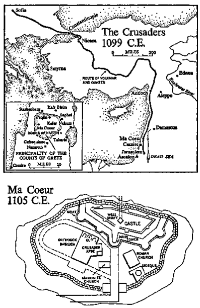

Headstone of the Crusader Volkmar I
Headstone carved from native limestone by guildsmen from Genoa working at St. Jean d’Acre, 1124 C.E., under orders from Count Volkmar II, who thus honored his father. (Here lies Volkmar of Gretz, whose soul rest in peace amen.) Stone put into place at Ma Coeur, December 21, 1124 C.E., nineteen years after the count’s death. Deposited in the ruins May 17,1291.
Shortly before dawn on Thursday morning, April 24, 1096, the priest Wenzel hurried to his master’s room in the castle of Gretz and banged on the door. Inside, the sleepy count merely growled, but repeated knocking roused him from his sleep and at last he grudgingly threw open the iron-studded door.
“Now what?” he grumbled. He was a stalwart man with thick shoulders, heavy neck and sandy-red hair. Although he was nearing fifty he appeared to be in his early forties, and his nightrobe showed hairy legs and big feet to match his capable hands projecting awkwardly from lace wristlets.
“Sir!” the gray-haired priest cried in joyous excitement. “They’re coming!”
“Who?” the sleepy count demanded.
“The ones I told you about.”
“The rabble?”
“I didn’t call them that.”
“If they’re rabble, why wake me?”
“You should see them, sir. They’re a miracle.”
“You go back to bed,” the drowsy count ordered, “and I’ll do the same.” But as he spoke he heard in the morning air a rustle. It sounded like the waves of the sea against his boat when he was returning from the war in Sicily, and as he listened it grew. A rooster crowed, dogs began barking and he heard the sound of feet running through the narrow streets of his city. And then he heard the sound itself, outside the walls: a rushing of many bodies, the soft swirling of dust and the slow creaking of wagons drawn not by horses but by men.
“What is it?” he asked his priest.
“The ones from Cologne,” Wenzel replied.
“I’d better see them,” the count surrendered, and while the priest watched he threw off his robe, revealing a powerful, hairy body, and slipped into his woolen clothes, ending with a pair of rough leather boots. The priest led him through the chapel and onto a battlement from which they could see below them, coming up the road that led from Cologne to Mainz, a huge collection of moving objects not fully discernible in the dawning light.
“What’s that in front?” Count Volkmar asked.
“Children,” the priest answered. “They run ahead from town to town, but they don’t belong.”
Volkmar leaned against the battlement and watched in amazement as through the dust raised by the scrambling children came file after file of men and women, undisciplined and unarmed. They moved through the cold early light like ghosts, their eyes transfixed and their feet shuffling with no apparent purpose but with a constant forward impulse. Volkmar cast his eyes backward along the interminable lines until the marchers were lost in dust.
“How many?” he asked his priest.
“At Cologne they estimated twenty thousand.”
“They have no arms! No knights!”
“They propose to have none,” Wenzel replied. “They say that with God’s aid they will conquer.”
Volkmar stood silent in the face of this strange army, marching forward as no other had done in the remembered history of the Rhine. Men and women loomed out of the darkness, shuffled silently past and others took their places. At times the procession was modified by clusters of wagons drawn by men or miserable horses, and each vehicle was piled with bags of clothing or remnants of food. On some, babies rode or old women, while in the wake marched a group of children much different from the wild ones who led the procession. These were tired. They had been marching for many days and no longer found energy for play or make-believe.
“Are those children…” Count Volkmar didn’t know how to finish his sentence.
“Those are the ones who belong,” the priest explained.
“They look starved,” Volkmar grumbled.
“They are.”
The count made a hasty decision. “Wenzel, when they enter the city, see that the children are fed.”
“They’re not stopping here, sir,” the priest told him, and Volkmar looked toward the head of the procession and saw that this was correct. The gates of the city were closed and the marchers were heading silently toward Mainz.
“Stop them!” the count ordered, and he dashed back into the castle to alert his wife and children so that they could see the amazing sight.
Wenzel, a thin man nearing sixty, hurried through the city, calling for the watchmen to open the city gates, and when the huge iron hinges had creaked in their sockets and the wooden slabs had swung aside, the priest moved into the midst of the marchers, waving his arms. The first part of the procession paid no heed, and passed on, but the marchers in the middle area saw the priest and came slowly to a halt. As they did so Count Volkmar and his wife, accompanied by a son and daughter in their teens, came purposefully through the gate, dressed in the fine garb of city dwellers. In a loud voice Volkmar announced, “We will feed all children.”
The crowd cheered and mothers began shoving forward twice the number of children Volkmar had anticipated, until more than a thousand were clustered about the gates of Gretz. Matwilda, the count’s pretty wife, was touched by the obvious hunger showing in the little faces and bent down to talk with some of the older girls, but they spoke no German.
“Can we feed so many?” the priest inquired.
“Feed them,” the count snapped, and men inside the city were summoned to bring out what food could be made quickly available. Volkmar tried to speak with the younger children but found that they also knew no German.
As he knelt to question one small boy he saw for the first time, sewed onto the shoulder of the child’s blouse, a pair of rudely cut strips of red cloth put together to make a cross. Pointing to the emblem he asked Wenzel, “Is this it?”
“Yes,” the priest replied, and Volkmar looked about him to find that most of the crowd pressing upon him were similarly decorated. The cross was usually small, the cloth ragged and of many colors, but the effect was impressive.
Count Volkmar was about to query a husband and wife regarding their insignia, when there came a shouting from the rear and the motley crowd opened a path for someone of apparent importance. It was a scrawny priest riding barefoot on a gray donkey. The little man had piercing eyes, sunken cheeks and matted hair. He wore a dirty black robe over which he had thrown a brown surplice lacking sleeves but marked with a flaming cross in red. Sensing from experience that Volkmar was the essential man in Gretz, the little priest kicked his donkey and rode directly to the count, crying in a cracked voice, “God wills it! You are to ride with us, for your salvation is in the balance.”
Suspiciously Volkmar asked his own priest, “Does this one represent the False Pope?”
“Yes,” Wenzel nodded.
“Get away from me,” Volkmar cried, drawing back from the man on the donkey.
“God wills it!” the little priest shouted, urging his tired animal forward.
The big German knight looked down at the inconsequential rider and said scornfully, “You serve the False Pope.”
“But the true God, and He commands you to ride with us.”
Not only did Volkmar refuse to ride with this rabble; he was sorry that he had volunteered to feed the children who now pressed in from all sides. If the little man on the donkey were indeed a servant of the False Pope it could be embarrassing for the Count of Gretz to be caught assisting him, and he seriously considered canceling the order so as not to implicate himself. But at this moment events were swept out of his hands, for from the gates of his city a mob of his town folk began rushing out to greet the little priest.
“Peter! Peter!” they shouted as one wave after another crowded to touch his robe or to caress the donkey. Some tried to pull hairs from the beast’s coat, but these were driven back by men protecting the priest.
“It is God’s will,” the priest shrieked in his high, cracked voice. He was a thin wisp of a man, about forty-five years old, driven by some tremendous inner compulsion which flashed in his eyes. “I have been sent to call you to your duty.”
The people of Gretz listened in wonder as he told them that they could be saved from the impending end of the world only if they marched with him. Listening to his wild words Count Volkmar became more convinced that the man must be avoided, and he led his family back through the ranks of his own townsmen until he was safe within the city wall. “Let none of that mob enter Gretz,” he commanded the guards.
His bailiff now came up. “Sir, if you want food for all those children you’ll have to give me extra money.” Volkmar considered this for a moment, then shrugged his shoulders.
“We said we’d feed them,” he replied with no enthusiasm. He left the gate, where the children were making a fearful noise, and retreated in some confusion to his castle, from which he continued to look down on the growing mob. “There’s a lot more than twenty thousand people down there,” he told his wife, after which he prudently summoned the captain of his guard and instructed him: “Without attracting attention, close the gates, and if any should try to force entrance you bowmen are to shoot them down.” It would not be said of him that he had trafficked with the False Pope.
Since food had already appeared, the pilgrims did not protest when the gates swung shut. Posterns were opened through which more food was passed, and finally the feeding of the children was completed. Parents, obviously starved, were allowed to grab the last scraps, while the cooks—looking over their shoulders lest the count see them—passed bundles of food to the little priest and his immediate entourage, whereupon the great mass started to move slowly onward toward the towns of Mainz and Worms and Speyer.
“It’s surprising how well the little priest maintains order,” Volkmar said grudgingly to his wife as they watched the dusty mob move off, but Matwilda uttered a sharp cry when the carts bearing families appeared at the rear of the procession, for she could see the privation under which the women and babies attached to this congregation moved. Surrounded by scrawny cattle, only a few of which were giving milk, these unfortunates lived in dust and danger.
“I’m sorry for them,” she sighed. “They shouldn’t be attempting such a journey.”
“Damn!” her husband shouted. “Who’s that at the end?” His wife followed his pointing finger and saw six or eight families from Gretz taking their places among the pilgrims.
“They’re our people,” she confirmed.
Thundering down the castle stairs Volkmar rushed to the gates, ordered the guards to follow him, and ran bareheaded out to intercept his travelers. “Hans!” he asked one. “Where are you going?”
“To Jerusalem,” the slow-witted field hand replied.
“Do you know where Jerusalem is?” the count demanded.
“Over there,” the man replied, pointing toward Paris.
“You get back behind the walls,” Volkmar growled impatiently. He summoned his guards, who cut the would-be pilgrims off from the disappearing mob. “What’s that on your shoulder?” the count asked one of the men.
“The cross of Jesus Christ our Saviour,” the man replied.
“Take it off,” Volkmar said, brushing at the offensive bits of frayed cloth, but his hand was stayed by that of Wenzel, who had followed the count to check on what might happen.
“Sir, if these men wish to follow the way of our Lord, they must be permitted.”
Volkmar wheeled to confront his priest, shorter by a head than he. “These men and women are needed to work my fields. Guards, get them back inside the walls.” The guards started to do so, but the priest continued his argument.
“Would you oppose the will of God?” he asked.
The question stunned Volkmar, for he was a man obedient to the law of Christ, but now his priest was asking him to reach conclusions on matters which he did not comprehend and he reacted roughly. “Inside the walls!” he shouted, and placing himself in the roadway with his arms spread wide like the branches of a cross, he barred the way. Grudgingly the would-be Crusaders filed back through the gates as Priest Wenzel blessed them for their holy effort, and when the gray-haired churchman finally turned to reprove the count, Volkmar growled, “No people of mine will follow the commands of a False Pope.”
But his voice carried little conviction, for he had begun to weigh the words of Wenzel: were his peasants, in trying to join the marchers, acting in accordance with Christ’s wish? Perplexed, he was about to retreat to his castle when he saw his bailiff dragging back into the city the pots that had been used for feeding. “How much did it cost?” the count asked.
“We’ll need six gold pieces to pay the merchants,” the red-faced bailiff estimated.
“I should have watched my tongue,” Volkmar commented ruefully, and as he spoke he saw in the square near the gates a group of people obviously agitated by something that one of their members held, and he elbowed his way into the mob. “What’s this?” he demanded.
“Klaus caught a hair from the priest’s donkey,” a woman explained, pointing with local pride to a man who stood with his hands cupped as if they contained gold.
“Let me see,” Volkmar commanded, and the man moved forward and slowly opened his hands, disclosing one gray donkey’s hair. The count was about to sweep away the blasphemous relic, but he saw the joy it had brought Klaus and the admiration it elicited from the mob. Disturbed, he turned his back on the stupid peasants and their donkey’s hair.
He walked to the southeastern corner of his city in search of someone with common sense with whom he could discuss the perplexing events of the morning, and he came at last to a fine house, cross-timbered in front and four stories high, nestled against the protecting wall of the city. “Anybody awake?” he shouted outside the front door, and in a moment a young girl, obviously pregnant and contented with that fact, threw open the heavily barred door and cried, “Count Volkmar! Come in. Father’s here.” She led the count through a hallway containing massive pieces of furniture and into an inner room where a remarkable man sat waiting in a long robe of Venetian material edged by a fur collar. He was in his mid-forties, a congenial, quick-eyed Jew with a black beard and a gold-embroidered cap, and the impression he created was one of unusual competence: in negotiation this one would be alert, in discussion judicious, and in physical crisis courageous. He nodded to Volkmar as the girl announced, “Father, it’s the count.”
To this impressive room, lined with folios, Volkmar was no stranger. Often he had come here to borrow money, more often to discuss gossip or to pick up bits of political information, for the man in the gold cap could read and write and in his earlier years had traveled to many lands. “Hagarzi,” Volkmar said, speaking as friend to equal. “I need six pieces of gold until the crops are in.” To this proposal the moneylender nodded, as if that part of the visit concerned him little.
“For that you could have sent your bailiff. What really brings you here?”
“I need to know whether a rabble like the one that passed Gretz this morning has any chance of reaching Jerusalem?” The Jew made no reply, and Volkmar asked, “Did you see them?”
“Of course,” Hagarzi said, implying that it was his business to see whatever passed Gretz at dawn. Then he added slowly, like a general reviewing his ancient battles, “I’ve never been all the way to Jerusalem. To Antioch, yes.”
“You went to Constantinople?”
“Several times. While the Hungarians and Bulgarians were still pagan I used to captain companies of traders on their way from Gretz to Constantinople, and we got there with only a few battles.” He leaned back and traced signs in the air, reconstructing the travel routes to the east. “It can be done. If you don’t arouse the Hungarians… or the Bulgarians.”
“Then you think there’s a chance the foolish priest on the gray donkey may succeed?”
“All the way to Jerusalem?” The cautious trader pondered this. “I saw no knights to protect them,” he said. “They carried few provisions.”
“What road will they take?” Volkmar asked.
“When we went,” the former captain replied, closing his eyes and holding his beard with both hands, “we followed the Danube to the point where the road turns north to Novgorod.” He began to reminisce about the vigorous days of his youth, when he had led his caravans to Smolensk, Kiev… “We traded with them all.”
“Suppose the rabble reaches Constantinople,” Volkmar interrupted, and the trader opened his eyes. “Could they possibly continue to Jerusalem?”
“They could start,” the moneylender replied. Obviously he did not care to discuss this aspect of the problem, so he launched a diversion: “I remember one year when we tried to go from Kiev to Constantinople…”
“You don’t think they’ll reach Jerusalem?” the count persisted.
“Volkmar,” Hagarzi said, laughing brusquely as he used the count’s familiar name, “this is a venture summoned by the Christian church. Would it be proper for a Jew to comment on its progress?”
“You and I are the oldest of friends, Simon,” and he also used the familiar name.
“They won’t get there,” the banker said. “When I was last in the east the Turks were becoming very strong. I wanted to revisit Antioch. Goods from Cyprus and Egypt. Impossible.” Quickly he added, “However, if I’d had a thousand well-armed men… knights… like you.”
Volkmar did not want Hagarzi to think that he was contemplating any crusade to Jerusalem, so he changed the discussion abruptly: “Which Pope will prevail?”
Again the Jew closed his eyes. “Only a close friend would deem it proper,” he reflected, “to ask a Jew’s opinion on that problem.”
“Only an old friend would know that you’ve been trading with Rome and probably have the answer.”
“From what the merchants in Rome tell us, our German emperor has backed the wrong man. His German Pope Clement is not going to gain acceptance. The French Pope Urban will.”
This was not what Volkmar had wanted to hear. For some time he had assumed that his emperor would get his headstrong way and that of the two contenders Pope Clement would be declared the rightful pontiff; but Volkmar had much respect for the opinions of the well-informed Jew and had rarely found him to be in error, and what Hagarzi was saying disturbed him.
“How can the French Pope win,” he argued, “if England, Germany and much of Italy are against him and if our Pope Clement holds Rome?”
“This idea of a crusade, which Pope Urban proposed …”
“You saw the mob, Hagarzi. What could it accomplish?”
“That mob, nothing. But my news from Normandy and Toulouse is quite different. Real leaders are sewing the cross to their tunics.”
Before the men could discuss the matter Hagarzi looked to his door, where his daughter appeared with a salver of spiced drinks and German cakes. Volkmar pointed to her belly and asked, “When?”
“In four weeks.”
“Am I supposed to give the little wretch a present?”
“As always,” Hagarzi laughed, and the men drank their wine of friendship.
In those years the Jews in cities like Gretz lived pretty much as they wished. Fanatic Christians sometimes howled against the commingling of Jew and Catholic, but no restrictive measures had yet been promulgated, so that a distinguished banker like Hagarzi could be accepted as one of the city’s important citizens. His sturdy house had become a center of city life to which many Germans like Count Volkmar came not only to borrow, but also to talk.
They came to borrow because of contrasting interpretations which had been placed by Christianity and Judaism upon two critical verses from the Old Testament. Catholics held that the stern commandment in Exodus meant exactly what it said: “If thou lend money to any of my people that is poor by thee, thou shalt not be to him as an usurer, neither shalt thou lay upon him usury.” This was interpreted as meaning that no Christian—on pain of excommunication or death—was allowed to let money at interest, and this ruling came at the precise time when trade was beginning to be international and when borrowing substantial sums to finance such trade was essential. What to do? It was then discovered that Jews, looking not to Exodus but to Deuteronomy, took their instructions from Moses, who had commanded them: “Thou shalt not lend upon usury to thy brother; usury of money, usury of victuals, usury of any thing that is lent upon usury: Unto a stranger thou mayest lend upon usury.”
So at the instigation of the Christians a curious agreement had been worked out: Christians would rule the world, but Jews would finance it—so to them was handed responsibility for all banking transactions, and it became customary for even cardinals and bishops to borrow openly from Jews at commonly understood rates of interest, while foreign traders had to do so in order to stay in business. In this manner Jews like Simon Hagarzi of Gretz prospered, but it was ironic that many did so against their own better judgment. Hagarzi, for example, sprang from a family which had wandered into Germany from Babylonia, settling themselves along the Rhine centuries before the present Germans had straggled down from the north. Like his predecessors in the little Palestinian town of Makor, Simon Hagarzi had begun life as a groats maker and he would have been happy to remain so; but in pursuit of grain he had come to know many distant cities, so that he was logically pushed into the business of banking. Now his transformation was complete; what Canaanites, Egyptians, Greeks, Romans and Byzantines had been unable to accomplish—taking Jews from the land and making merchants of them—Europe had achieved. Jews were now the money-manipulators, and without their services the new Europe could not have matured.
But even if Hagarzi had not controlled the credit of Gretz, Germans would still have come to talk with him, for in an age when few could read and when news traveled slowly, Hagarzi was perhaps the best-informed man in the city. Yet he was humble in his knowledge, and if he knew much of the Talmud by heart, he kept it to himself and his family, for he knew that the Christians had their own Book, and he never intruded his religion upon them. Even so, he was known to Christian and Jew alike throughout the city as a man who united in his person not only sagacity but also a radiant personal charity which had confirmed him in the title God’s Man, a name by which the men of his family had been known through many generations in Makor and Babylonia; even devout Christians found spiritual profit in knowing this particular Jew.
As always, when Count Volkmar left Hagarzi he had his money, which he handed over to his bailiff. He then walked disconsolately to his castle and slowly climbed the stairs to where his wife sat at breakfast with the children, but he had not had time to tell her of Hagarzi’s prediction about the competing Popes when a servant ran in to inform him that strangers were riding down the road from Cologne. The family went onto the battlements, from which they saw a cloud of dust sweeping energetically toward the city. “It must be half a dozen horsemen,” Volkmar estimated, and as he studied the approaching cyclone he craned his neck forward to see who might be causing it.
At last, as the men drew close to the wall, he discerned that the foremost rider was dressed in a light suit of mail, his helmet and shield at his side. Over the metal suit he wore a long tunic of white upon which had been stitched a large cross in blue. Then the man’s head became discernible, a handsome, commanding blond head with clean-shaven chin and blue eyes.
“It’s Gunter!” Matwilda cried happily as she ran down to greet her brother.
When the seven knights from Cologne were seated in the hall, with Gunter clanking his metaled feet, the exciting news was broken. “We’ve taken the cross,” the young German announced. “Within the month we’ll march to Jerusalem. When we leave we’ll have fifteen thousand men with us, and you’re going along.”
“Me!” Volkmar ejaculated.
“You! And Conrad of Mainz and Henry of Worms. Everyone.”
“I do not follow the commands of a False Pope,” Volkmar protested.
“To hell with the Pope!” Gunter shouted. “Clement, Urban? Who gives a damn? Brother, in the Holy Land there are kingdoms to be won, and no quarrel about Popes must separate us from such booty.”
The knights who had ridden forth with Gunter on his conscripting tour nodded, and one asked Matwilda, “Wouldn’t you like to be Queen of Antioch or Princess of Jerusalem?”
“I’d like to see Gunter with such lands,” she replied, for she knew how strenuously her younger brother wanted a fief of his own.
“But I’m quite content here in Gretz,” Volkmar insisted.
“Don’t you want to go crusading?” his brother-in-law shouted. “Everyone else in the Rhineland does.” He dashed to the platform overlooking the public square and bellowed, “You down there? How many of you want to march to Jerusalem and rescue it from the heathen?”
A shout welled up and echoed through the castle. One man cried, “Klaus has a hair from the donkey of Peter the Hermit.”
At mention of the little priest’s name Gunter scowled, then yelled to the crowd, “In one week all able-bodied men who want to march with me to Jerusalem…” Now the shouting grew frenzied and the blond knight waved his arms, but when he returned to the table he slumped noisily into his chair and muttered, “That damned monk. He hasn’t a chance of getting to Jerusalem.”
“You think not?” Volkmar asked.
“You saw him. Were there ten men in his twenty thousand capable of fighting? Peasants, old women.” The young man rose and stamped about the room, his mailed feet clanging on the stones. “Volkmar, to recapture Jerusalem for Jesus Christ we need soldiers, men trained to war. The Turks are terrible fighters…”
“And you are determined to go against them?” Matwilda asked.
Gunter leaped across the room and knelt beside her. “Sister! Some fighting man who leaves Europe this month is going to be crowned King of Jerusalem. Half a dozen others are going to hack out great marches for themselves. I intend to be one of those men.” Then, somewhat ashamed of his personal outburst, he pointed to one of his companions, adding, “And Gottfried here will gain another.” Volkmar and his wife looked at Gottfried, a chinless fool. The knight grinned and nodded. He, too, intended to win a barony in the Holy Land.
Then Gunter’s wild ambition again surged to the fore and he cried, “One month from today, on May 24, we shall march forth from Gretz, fifteen thousand, twenty. And you shall be with us.” He kissed his sister good-bye and swept down the castle stairs, eager to spread the word of his crusade to the other Rhenish cities. At the gate he saw Klaus still clutching his donkey hair, and he shouted, “Can you get a horse, man?”
“Yes,” Klaus called back.
“Then ride with us,” Gunter cried. “I need a servant who is lucky.” And when the seven knights rode off to the south Klaus of Gretz rode with them.
When they were gone, and the excitement had subsided, Wenzel of Trier came quietly to his lord and said, “It is my opinion, sir, that you should take the cross.”
“Why?” Volkmar asked in deep seriousness.
“Because it is the will of God,” Wenzel replied.
“Those are the words of the False Pope’s man,” Volkmar countered.
“In this great matter, believe me, Volkmar, there is no false Pope, there is no true. There is only the call of God. The holy city, the land of our Lord Jesus Christ, is held by the infidel and we are summoned to redeem it.”
Count Volkmar leaned back, disturbed. “You speak as if you…”
“One month from today,” the hard-eyed priest announced, “I shall ride with the others.”
“But why?” Volkmar pressed. “You have a chapel here. We need you.”
“And we need you in Jerusalem.”
For a week Count Volkmar pondered the invitation that Gunter had so forcefully laid before him, and each day Wenzel of Trier, his stern face staring out from beneath the gray hair he wore in bangs, added his priestly pressure; a spiritual movement without comparison was under way and any man of courage who missed it would be forever ashamed. Wenzel never spoke of kingdoms or principalities; in his heart was the call of God and he did not want his master to ignore that call.
On the succeeding Saturday, Count Volkmar, who could neither read nor write, summoned Wenzel to draft a cautious letter of inquiry to the German emperor, asking whether a Rhenish knight could properly respond to the crusading summons of the False Pope, who also happened to be French; and this was a more delicate question than it might have seemed, since the French Pope had recently excommunicated the German emperor and there was personal bitterness between them, and while Volkmar waited for a reply he went to discuss the matter with Hagarzi, God’s Man, and the Jew listened as the big, awkward count explained his dilemma: “I want to serve God, but I do not want to anger my emperor. How can a German emperor give permission to his knights to follow the orders of a French Pope, who isn’t even legal?”
The moneylender laughed, and grasping the edges of his robe with both hands, said: “Count Volkmar, if you’ve decided to go on the Crusade…”
“I have no intention of going,” the count protested.
Ignoring the disclaimer Hagarzi continued, “Be guided by the story of one of our great rabbis, Akiba. The question arose of blowing the ram’s horn in a new city, because Jerusalem, which alone had the right to sound such a horn, had been destroyed by the Romans, What to do? Akiba and his liberals argued, ‘Let us sound the horn here and establish a new Jerusalem.’ But the conservatives countered, ‘Only in Jerusalem may the horn be sounded. And Jerusalem is no more.’ So Akiba made this proposal: ‘The hour is upon us. Let us blow the horn now and resume the argument later.’ So they blew the horn. Then came the conservatives to argue, but Akiba pointed out, ‘What’s to discuss? The horn has been blown. A precedent has been set. In the future we must like good Jews observe that precedent.’”
The two men laughed, and Hagarzi said, “Believe me, Volkmar. Don’t wait for the emperor’s reply. Decide now what must be done, then do it.”
“Even though I may infuriate my own emperor?”
“Governments are made to be infuriated,” the Jew replied, but in spite of this daring advice Volkmar decided to wait.
Before a reply could reach Gretz, Gunter and his six knights rode back from their foray up the Rhine, and the party had grown to fourteen enthusiasts, including an attractive girl whom Gunter had acquired in Speyer. At the castle of Gretz he indicated that from now on the girl would be sleeping with him, in one of Matwilda’s rooms, and his sister was outraged, but Gunter ignored her.
“Wherever we rode,” he cried in flushed excitement, “men of great reputation signified that they would join us at the end of the month. Volkmar, you’ve got to come.”
The count refused comment, but Wenzel confided, “At least he’s written to the emperor for a judgment.”
“Volkmar!” the excited young knight cried. “You’re one of us. The emperor gave Conrad of Mainz permission to go.”
“He did?” Volkmar asked cautiously.
“Yes! Conrad’s bringing a troop of nine hundred.”
The words stunned Volkmar. How could the city of Mainz, no larger than Gretz, spare nine hundred men? Who would tend the fields? And for the first time he realized that a sweeping, all-embracing movement was afoot, one which ignored plow fields and ordinary husbandry.
“From Gretz we’ll take away twelve hundred men,” Gunter predicted. “I’ve got Klaus circulating tonight. We’ll need horses and carts, too.” He had discarded his mail suit and appeared in light robes, covered by the tunic which bore the large blue cross, and as he spoke he kept his left arm about the pretty girl whose name no one knew. “It’s an enterprise of great danger, and perhaps I have spoken too much of the principality I intend carving for myself with this right arm. For there is also the matter of God’s will, and Wenzel here can tell you that it is shameful to have the holy places of our Lord in infidel hands. By God,” he cried, striking the table, “it shall not continue.”
He led his strange girl to bed and in the morning assembled his group and rode off, taking with him three more horsemen from Gretz. He had been gone only a short time when from the south a messenger rode in with the emperor’s reply: “We have passed far beyond the matter of Popes. We must win Jerusalem for our Lord Jesus Christ. So if you find it in your heart to fight for the recovery of His homeland, proceed.” When Volkmar heard the words he knelt on the stone and asked Wenzel to bless him; for if his brother-in-law was marching to the Holy Land for a broad mixture of reasons, Volkmar would go for one only: to strike the infidel and drive him from the holy places. Looking up, he laid hold of his priest’s hands and swore, “I take the cross. It is God’s will.”
But when he came to ask Matwilda to sew upon his tunic a red cross he found himself confronted by a problem which he was quite unable to solve, and he walked through the city to Hagarzi’s house, where he was again greeted by the Jew’s pregnant daughter. As soon as he was closeted with the moneylender he burst out, “Hagarzi, I need help.”
“Money?” his friend asked.
“Much more difficult.”
“The only thing more difficult is a man’s wife.”
“Correct. I’ve pledged myself to go crusading …”
“I hope you reach Jerusalem,” Hagarzi replied solemnly.
“We’ve a good army,” Volkmar assured him.
“Then you have a chance.”
“But when I informed my wife I found her sewing the cross on her own garments and on those of our children.”
The moneylender leaned back in his chair and opened his eyes very wide. “She intends going too?”
“Yes, her brother has infected her with his strange dreams.”
“Volkmar,” the banker said earnestly. “I’ve been four times to Constantinople and never were we able to take a woman. It’s a hundred days through dangerous country.”
“She insists.”
God’s Man looked with compassion at his count. The two had worked together on numerous projects and the amount of gold that Hagarzi had contributed to works initiated by the count could not be calculated, for the Jew had long since stopped keeping accounts. Of Volkmar’s friends only Hagarzi could appreciate what decisions the count was now facing. In such crises the experienced Jew had found it was best to speak frankly: “Volkmar, if a hundred men leave Gretz headed for Jerusalem and back, fighting Hungarians, Bulgarians, Turks…”
“Last time you said that Hungarians and Bulgarians are now Christians.”
“They are, but you’ll still have to fight them.”
“It’s the infidel we intend fighting,” Volkmar protested.
“Of a hundred men who leave, nine will be lucky if they return.”
Volkmar was stunned. He had thought that fighting the infidels in Jerusalem would be much like fighting the Normans in Sicily. A few would die on each side, but most would come home with here and there a scar. The Jew continued, “So if you leave us, there is little chance that I’ll ever see you again.” He hesitated. “Or that your countess will, either.”
“You would take her?” Volkmar asked.
“Yes. But not your son. We’ll need a count in Gretz.”
Volkmar sighed and looked at the row of folios above the moneylender’s head; the castle owned not one. He asked, “Could you lend me gold on the fields across the river?”
“Of course. But if you go you must leave a will protecting me.”
Without deciding then, the count left the banker’s house and walked through the market, where women sold the first fruits of spring—fine onions and beans —and when he reached the castle he did something that he had not done for a long time. He kissed his son, then ripped from the boy’s shoulder the red cross which his mother had that morning sewed to the tunic. “You are not going.” The boy began to weep and Volkmar summoned his family. They gathered in a cold, bare room, for the German castle of that period was little better than a commodious barn with stone flooring. The chairs were rough, the table unsmoothed and the linen coarse. A damp smell of horses and urine permeated the place and there were no fabrics to soften the effect of the sweating walls. Painting and music were unknown, but an open fire kept the dank rooms reasonably comfortable in winter, and there was plentiful food, cooked pretty much as barbarian forefathers had cooked it six centuries before.
“Matwilda and Fulda will ride with me,” Volkmar announced, “Otto will stay home to hold the castle with his uncle.” He drew his son to him and held the boy’s chin to keep it from trembling.
Matwilda, then in her middle thirties and as attractive as when Volkmar had ridden north to court her, was pleased with the news that she could make the trip, and she understood why Otto had better stay at home. She consoled her son, then listened as her husband summoned Wenzel and a scribe: “If I should not return, the fields across the river are to become the property of the monastery at Worms, which shall first discharge the debt I owe to the Jew, Hagarzi, known in Gretz as God’s Man. The castle, the town and all lands pertaining to both shall become the property of my good wife Matwilda, or if she do not return, to my son Otto.” The detailed description continued, the thoughtful words of a man who loved God, his family and his fief, concluding with a final paragraph that was to be much quoted in later years when men tried to penetrate the motives which had inspired the Crusaders: “Let it be known that I am marching to Jerusalem because the will of God should be respected in this world and because the scenes in which our Saviour, the Lord Jesus Christ, lived should not remain in pagan hands. I am marching with a goodly band, and we have placed ourselves entirely in the hands of God, for we go forth as His servants to accomplish His will.” When the words were read aloud to him he nodded and made his mark, which as it appears on the document today resembles the red cross he was wearing as he signed.
The next weeks were filled with unusual activity. If Count Volkmar of Gretz was going to Jerusalem, along with more than a thousand of his people, he would leave little to chance. For his wife and daughter, eight wagons and sixteen draft horses were provided filled with enough equipment to serve them and the six servants who would care for them. Eight additional wagons carried foodstuffs, implements and armor. Besides the servants for the countess, an even dozen serfs marched on foot to care for the count and Wenzel of Trier. In addition, eight grooms brought along some two dozen riding horses for the minor knights associated with the count, and these were followed by about a thousand men consisting of merchants and farmers, monks and ordinary serfs. About a hundred women wanted to join the procession, but this number diminished after Matwilda had weeded out the known prostitutes.
On Sunday morning, May 24, 1096, the Gretz contingent formed up outside the city gates, an orderly crowd of peasants waiting for the arrival of Gunter and his men from the north. At about ten o’clock outriders appeared, soon followed by a host of some six thousand, and it was quickly apparent that the care which Count Volkmar had given to the selection of the men from Gretz had not been duplicated by Gunter when he chose the volunteers at Cologne; for he appeared with a rabble. Thieves, men sprung from jail and notorious prostitutes were conspicuous. There were gangs of debtors who had shaken free of their creditors, and peasants who would hoe the fields no more. Boredom was banished and the frenzy of unknown adventure was high as Gunter, now splendid in new armor and a red tunic with a blue cross, spurred his horse through the wagons and the cattle. He was attended by eleven knights, and these were not rabble but hardened young men capable of defending themselves and the unruly crowd they led.
“Did you ever see such an army?” Gunter cried with animal joy as the knights rode up to welcome the new recruits.
Volkmar made no reply, but as the mob pressed in upon his own well-disciplined people he suggested, “Let Wenzel bless us as we start,” and all uncovered as the priest intoned, “Dear God, protect this holy army as we march to Jerusalem to recover it from the infidel. Strengthen our arms, for we fight Your battle. Sweet Jesus, lead us, for we wear Your cross. Death to the infidel!”
The multitude echoed, “Death to the infidel!” and at this unfortunate moment a Jew of Gretz who sold clothes in the market happened to pass the gates, and Gunter cried, “Great Jesus! Why should we ride to Jerusalem to fight His enemies there and leave His greater enemies here to prosper?”
And in the heat of the moment he dashed with a loud cry through the gates and with one swipe of his great sword slashed off the head of the unsuspecting Jew. The mob howled its approval, and men from the north started spurring their horses into the city, followed by thousands on foot.
“Kill the Jews!” they bellowed.
A Jewish woman was coming to market, and a lancer ran her through, using his tremendous strength to toss her in the air, where she hung suspended for a terrible moment, her eyes still seeing the sudden mob beneath her. The crowd shrieked and she descended sickeningly toward the street, where they trampled her to death.
Volkmar, sensing what must follow, tried to fight his way back into the city, but he was powerless. “Stop!” he begged, but none would listen.
The mob was after Jews but could not have explained why. In the obligatory Easter sermons they had listened to ill-informed priests crying, “The Jews crucified Jesus Christ and God wants you to punish them.” From learned discourses delivered by bishops they had discovered that in the Old Testament, Isaiah himself had prophesied that a Virgin would give birth to Jesus Christ, and that the Jews had stubbornly rejected the teaching of their own Book: “For this sin they shall be outcast forever.” And in their daily life they watched as the Jew lent money, which honest men were forbidden to do, and some had known at first-hand the interest which moneylenders charged. But stronger than any of these complaints was the inchoate suspicion, not often expressed in words, that in a world where all decent men were Christian, there was something intolerably perverse in a group who clung obstinately to an earlier religion which had been proved an error. The Jews were a living insult to the trend of history, and if one helped exterminate them, he must be doing God’s work. Therefore, when Gunter pointed out the folly of marching to Jerusalem to confront God’s enemies while the greater foe stayed here in Gretz, he awakened a score of latent hatreds.
“Kill the Jews!” the mob roared, storming its way through the gates, and local residents—who had no specific cause for cursing Jews—were caught up in the frenzy and suddenly turned informer. “In that house a Jew lives!” Like locusts the mob descended upon the house, killing, pillaging and laying waste.
“Get the moneylender!” cried a man who had never borrowed from any Jew, and like a monstrous animal the crowd turned with one accord and swept into the southern corner of the city, where a Christian led them to Hagarzi’s four-storied house. Fortunately the banker was absent, but soldiers flushed out his daughter, whom they ran through with two lances, throwing her far over their shoulders. As she flew in the air it became evident that she was pregnant, and women shrieked approvingly, “With that one you caught two!” And they stamped her to pieces.
“The synagogue!” they shouted, and this low building so unlike a church infuriated them, for when they came to that holy place they found that some sixty-seven Jews had taken refuge inside. “Burn them all!” the mob screamed, and about the entrances chairs and scraps of wood were placed, drenched with oil, and set afire. When gasping Jews tried to fight their way free they were greeted with lances jabbing them back into the flames. All perished.
They were the lucky ones, for now the Crusaders started flushing out Jewish women. Old ones they killed on the spot, running them through with daggers. Younger ones they stripped naked and raped time after time in the town square, with all applauding. Then, in disgust, they hacked off the girls’ heads.
For two sickly hours the Crusaders stormed through the streets of Gretz, killing and maiming and defiling. When at last they leaned weary on their swords, with blood on their tunics and smoke in their eyes, they justified their slaughter to each other: “It would have been folly to leave for Jerusalem when the men who crucified our Saviour stayed behind to grow rich.” When they withdrew from the city they left behind eighteen hundred dead Jews and the beginning of a heritage that would haunt Germany forever.
In the dreadful silence that followed, when the great knights were gone and the priests, one sturdy Jew wearing cloth from Venice and a fur collar crept out from the refuge into which he had fought his way some hours before and started moving cautiously through the alleys. He saw the gutted synagogue with its sixty-seven charred skeletons. He saw his offspring strewn across the streets. He saw the smoldering memorials and the frightened, bewildered faces of the neighborhood Christians whom he had often befriended. They recognized him as a Jew, one of the great men of their city, but they were so sated with killing that no one raised his hand against the pitiful man. We leave him there—an honest banker—beginning to pick up the hideous shreds of his life, moving with glassy eyes through the alleys of Gretz; but we do not abandon him, for he will be with us again and again. His name is Hagarzi of Gretz, a fugitive groats maker from the town of Makor, and to his neighbors, when the grandeur of his courage is recognized, he will continue to be known as God’s Man.
When the Crusaders camped that night beside the Rhine, Count Volkmar left his wife and went to the tent of the captains, where he accosted his brother-in-law, who lounged in a chair, demanding, “How dare you kill the Jews of my city?”
Gunter, relaxed after the exciting day, had no desire for argument. “They are the known enemies of God,” he explained, not raising his voice, “and in this tent we have just sworn that when we have passed none will live along the Rhine.” The knights showed that they supported this resolve.
Volkmar, appalled by the coldness of this evil decision, grasped Gunter’s arm. “You must not encourage the men,” he pleaded. “Look at the madness they performed in Gretz.”
Patiently Gunter brushed away his brother-in-law’s hand. “I’m sorry the fire from the synagogue burned some of your city,” he apologized, determined that no argument should mar the profitable day.
Volkmar dragged him to his feet. “You must prevent such riots,” he commanded. “You’re not to kill Jews.”
Gunter was annoyed. He was taller than Volkmar, heavier, younger. But he merely removed his brother’s arm and slumped back into his seat. “It would be folly to leave the Jews behind. They crucified Christ and they must not grow rich while we are absent fighting.” He turned from the count, dismissing him, but such contempt Volkmar would not tolerate, and he roughly dragged Gunter to his feet; but the young blond warrior had had enough. Raising his powerful right hand he pushed it into his brother’s face and shoved with force. Volkmar was driven back. He staggered and fell. Reaching for his sword he would have unsheathed it, but was prevented from doing so by Gunter’s knights, who closed in on him and lifted him to his feet, rushing him from the tent. Gottfried, the foolish one with no chin, found bravery and shouted from the tent flaps, “Bother us no more. Gunter leads this army and we shall leave not one Jew alive.”
Up the Rhine surged the Crusaders, led by Gunter with his cross of blue, and wherever they struck, Jews were slaughtered. At Mainz, at Worms, at Speyer there were killings to make a man sick. At the head of the murderers rode Gunter, shouting that God Himself had ordained the destruction of His enemies. In small towns Jews huddled together in one house and were burned alive. In cities they crept into protected quarters and were chopped to death as bold knights coursed among them. In one town the Jews assembled, and with knives sharpened as the Torah demanded for ritual slaughter, methodically cut their own throats so that the floors were slippery with blood when the Crusaders crashed down the door.
“Filthy infidels—to do such a thing!” the knights protested, but their rage reached its apex when Jewish mothers slit the throats of their own babies rather than wait for the crusading lances.
“They’re animals,” Gunter bellowed. “What mother would kill her own babe?”
We can speak accurately of these matters because Wenzel of Trier recorded them in his chronicle of the German Crusade:
Most strange in this chain of death was the fact that except for a few Jews who were killed in the heat of first assault, all could have saved their lives and their souls by the simple act of converting to the True Faith, but this they obstinately refused to do, preferring to maintain their abominable error rather than to accept salvation. I myself offered not less than four thousand Jews the love and peace of my Lord Jesus Christ, but obstinately they turned their backs upon me, crying, “Hear, O Israel, the Lord our God, the Lord is one,” and our Christians had no other choice but to slay them.
Sickened by the killings my Lord Volkmar tried repeatedly to break away from the army and return home, but I was forced to remind him that he had sworn an oath to capture Jerusalem and if for any reason he refused to honor that oath he would be forever excommunicate, so he had no escape but to keep with us and I consoled him: “Is it not better that an honest man should ride with Gunter, endeavoring to restrain him?” But even so, I believe that my Lord Volkmar would have left us had not his wife Matwilda pleaded with him that it was his duty to remain, so that what later happened to the countess was in a sense of her own doing.
The slaughter of the Jews continued until one afternoon two girls about seventeen years of age stood side by side until the rapists were upon them, then carefully slit each other’s throats. It was impossible for two people to kill each other in this manner, but the Jewish girls had done it.
“For God’s sake, stop!” Volkmar pleaded for the hundredth time, and when his wife saw the two dead Jewesses, of the same age as her daughter Fulda, but prettier even in death, she ran to them and kissed their ashen lips; and the killing ceased—but thirty thousand Jews were dead, and the great Crusade had been launched in blood.
The march through Austria was more peaceful, for when the attention of the knights was no longer distracted by Jews they were free to look among the women who had accompanied the march, and each found one or two who promised well on the long journey. And there were pleasant nights in the hayricks and under the stars. Gunter kept the young woman he had picked up on his initial survey as well as a prostitute from Speyer; but Volkmar stayed with his wife and daughter, praying that somehow the rabble of which he found himself an unwilling part would finally stumble into Constantinople, where the real armies would be assembling.
But in Hungary, Gunter and his Germans ran into trouble. Barely a month had elapsed since the hordes of Peter the Hermit, marching without money, had caused ill will by trying to live off the land, snatching what they needed from Hungarian peasants, and Gunter’s men were about to harvest the hatred thus engendered. At the first town the Crusaders found that local merchants had closed their shops, knowing that they would not be paid if they kept them open, and there was no food. Gunter solved this by shouting an order: “Break open the shops and help yourselves.” There was moderate fighting and some two dozen Hungarians were killed.
“By God!” Gunter cried as he assembled his men at the far end of town. “They meant to give us trouble and we are the Lord’s men!”
“Let’s go back and destroy the place,” one of his assistants proposed, and for a moment the angry mob hesitated on the verge of another slaughter, but Count Volkmar succeeded in luring them down the river and a massacre was avoided. Of the leading knights, he was the oldest, and certainly the sagest, so he pointed out to his younger associates that their main job was not to brawl with Hungarians but to reach Constantinople with as many fighting men as possible. “The enemy is in Asia,” he kept reminding them.
But when at the second town the citizens—prewarned by messengers from the first—barricaded the gates, refusing to allow any Crusader to enter, Gunter shouted, “Open the gates now or we’ll burn them down.” The Hungarians refused and a great fire was started, and whenever a Hungarian tried to escape he was shot with arrows and the town perished.
From that day on, it was war between Hungary and the Crusaders. When the latter reached a town they found it evacuated, with all food gone. Starvation threatened. Ruthless Hungarian raiders stalked the stragglers, killing off the weaker Germans. Horses and wagons were destroyed and such constant pressure was maintained that Gunter lost one man in eight.
With groans of relief the disorganized columns finally straggled into Bulgaria, where those recently converted Christians were willing to extend the Crusaders one chance: the first Bulgarian town sent emissaries to welcome the marchers, but a priest warned Wenzel: “Tell your knights to behave, or there must be trouble.” Wenzel summoned Gunter and Volkmar and said, in words which he later recorded in his chronicle:
“My Lords, we have seen in Hungary what ill returns a want of Christian grace can bring, and I pray you, direct your men to behave as an army of God should, and let us be gentle with the Bulgarians, for they worship the same Jesus Christ that we do, and let us be an example to them of what the brotherhood of the cross signifies.” But either they did not heed my words or their men did not listen, for after the gates were opened and the market made available, our men, sore and famished from the wars in Hungary, descended upon the poor Bulgarians like heathen, taking their wares for the asking. The townsmen, a vigorous people, defended themselves ably, and a fighting began in which many were killed, and the Crusaders became enraged and chased through houses seeking for women, which they treated most shamefully, killing many. It was a pity that day to be wearing the cross of God.
The retaliation was inexorable. If the raiders of Hungary had been remorseless, those of Bulgaria were worse, and on the afternoon of July 15, 1096, a barefoot crowd of peasants swept down and isolated the contingent in which Count Volkmar and his family traveled, taking some seven hundred Germans prisoner. To his horror the count watched as the Bulgarians started methodically to chop off the heads of all, but he was saved by a knowing peasant who cried, “For this one and his family we can get ransom.” And Volkmar was led away to prison at Sofia.
In some ways this was the best thing that happened to him during the Crusade, for while he languished in jail with his wife and daughter, waiting for Wenzel to appear with the ransom money, Gunter and his knights struggled and slaughtered their way through Bulgaria, losing almost a third of their army. And when they finally did reach Constantinople they found their way barred by the great wall of that city.
“Open the gates, or we’ll tear the city down!” Gunter blustered, whereupon the Byzantine Christians dispatched a skilled army which punished the Germans badly, killing off another nine hundred. Much chastened, the Crusaders were admitted to the marvelous capital of the east just in time to join up with Peter the Hermit as he boarded a small fleet which would ferry him from Europe to Asia. With deep emotion Gunter stood in the bow of his boat, waiting to leap ashore in Asia and start the real march to Jerusalem. Of the sixteen thousand pilgrims who had started with him from the Rhine less than nine thousand remained, but as the boats touched shore these cried with great voice. “It is God’s will! Let us crush the infidel.” The Crusade was formally under way.
On October 1, long after Gunter had crashed into Asia, Wenzel of Trier returned to Sofia with a bag of ransom money, and as the governor of the prison accepted it he told the priest, “If all Crusaders had been like your Count Volkmar we Bulgarians would have given them no trouble.” With seeming regret he bade the count and his family farewell and dispatched an armed escort to lead them to the capital. “May you destroy the infidel,” he called as the little convoy headed for Constantinople.
They reached the massive walls on October 18, 1096, and Volkmar ordered the escort to halt so that he could examine the impressive fortifications, and he found that where his castle wall at Gretz had a thickness of four rows of stone, the Byzantine had twenty. “I should not like to be assaulting this fort,” Volkmar remarked to the priest.
“Sire,” the Bulgarian guard interrupted, “this is not the fort. This is only the outer wall.”
With growing astonishment the Germans entered the city, and when they came at last to a real fort Volkmar said flatly, “From an outside assault this could not be taken,” and the Bulgarian told him, “The forts held by the Turks in Asia are stronger by far, and you will have to take them if you wish to reach Jerusalem.” For the first time Volkmar sensed the kind of struggle he was engaged in.
He continued, wide-eyed, to where the roadway offered a view of the Golden Horn, with many ships moored to its twisting, resplendent shores, and he caught sight of the opposite bank, teeming with shops and merchandise. This was no rural Rhine; this was the heart of a great empire; and then he saw to the right the many-domed splendor of Sancta Sophia, radiant beside the sea, and he knew how special the city was.
When he was delivered to the underlings of the emperor he asked where his fellow Crusaders were, and was told, “We have word that Godfrey of Bouillon will arrive shortly and Robert of Normandy is coming.”
Relieved to hear these impressive names, Volkmar explained, “I meant Gunter of Cologne and Peter the Hermit.”
The man’s face darkened and he said, “Concerning them you must ask others.”
Later Wenzel prowled about the market and found that Gunter and the Germans had crossed into Asia in August and were already engaged in fighting the Turks. The news depressed Volkmar, not because he was afraid that his brother-in-law would get to his dreamed-of realms before he, Volkmar, could catch up, but rather because if fighting were at hand all men of honor should attend, and he voiced his disappointment to Matwilda. But the next day Wenzel returned with the rumor that the rabble in Asia had stumbled upon the Turkish army and had been annihilated.
For three gloomy days conflicting reports ricocheted across the shores of the Golden Horn, and at last Gunter of Cologne was ferried back from Asia, so gaunt and hollow-eyed that his sister hardly knew him. The once ebullient fighter had lost forty pounds and his blond hair was matted. His tunic was shredded and the brave cross of blue was torn half away. He was pleased to see Volkmar, but only so that he could collapse onto a brocaded bed, where he asked for water, refusing to speak.
During the first full day the haggard German slept and said nothing, then finally he stared at Wenzel, who had waited patiently by the bed, and said, “Seven of us got back.”
Wenzel called for the count, repeating to him and Matwilda what the Crusader had muttered.
“Only seven knights got back?” Volkmar asked.
“No knights but me,” Gunter replied, twisting his shoulders as if to avoid interrogation. “Of the rest, six peasants.”
“Where did you leave the women?” Matwilda asked.
Her brother lifted his head to look at her, then broke into a thin-lipped grin. “The women?” he repeated. “Have you ever watched a band of Turkish foot soldiers rush a camp of children and horses and women?” He flicked his right hand four or five times, indicating sword thrusts. He continued to grin stupidly, his face out of control.
“They were all lost?” Volkmar asked.
“Brother,” the shaken knight replied, “of all who marched with us, seven survived.”
The priest knelt beside the bed and began to pray, while Volkmar tried to visualize the small army that had marched past Gretz only five months before. Ultimately it had contained more than twelve thousand men plus three or four thousand women and children, and Gunter had lost all but seven. “Merciful God,” Volkmar prayed, “what kind of crusade is this?”
Then Gunter insisted upon talking: “It wasn’t always defeat. Oh no! We had one stirring victory. We were marching inland from the sea and came upon a village from which issued a small army of men well armed and dressed in flowing robes. With great cries we fell on them and killed them all.” He began to giggle nervously—a great blond man behaving as if he were a child, so that Volkmar and Priest Wenzel looked at each other in consternation, but after a moment he regained control and said, “When all were dead we discovered from their women that they were Christians marching to join us. But they looked like Turks … the long robes …” He half sat in bed and pleaded with Volkmar: “What right has a Christian to wear a turban?” No one spoke and he fell back on his pillow, staring at the ceiling. Where had his knights gone? the lovely women? dumb Klaus clutching his donkey hair? But Volkmar could see only chinless Gottfried, grinning vacuously that first morning at Gretz. It was he who best represented the sixteen thousand dead.
Volkmar recalled that the monks who had preached the Crusade had honestly warned, “We are going to fight for the Lord and some will die, but all who surrender their lives in the great attempt will be granted remission of sin,” so it had always been understood that there would be losses; furthermore, Hagarzi had warned that of a hundred who left not more than nine would return. The count therefore had known that the proud venture entailed the risk of death, and as a man in his late forties—an advanced age for that day—he was prepared for his own; but he was not prepared for only seven survivors out of an army of sixteen thousand. Now it was his throat that was dry.
“What error did you make?” he asked his brother-in-law.
The young knight looked up at him with astonishment. “Error?” he repeated incredulously. “You mean what one thing did we do wrong so that the Turks won?” He laughed almost hysterically. “What did we do wrong?” he repeated over and over until his sister drew Volkmar and the priest away.
One of the other survivors, a freeman from Gretz, discovered where his count was staying and came by to submit a more coherent report, and again Volkmar was appalled at the man’s condition, for he was so haggard that he must have been starved for months. “No organized supply,” he growled. “No discipline. Women in the way and guards at night sleeping with the women. Gunter insisting that his two whores get full rations. Priests praying where we needed cavalry.” It was a sorrowful picture relieved by only one report: “In the final battle at Nicaea the few knights we had were marvelous. Gunter killed… how many?” In admiration the freeman recounted the blond knight’s conspicuous bravery: “And after performing all this he cut his way through the Turkish lines, and since I had stolen a horse, I was able to ride after him. But the courage was his, not mine.”
Volkmar fed the man and asked why the Turks were such powerful men, and to his surprise the man became excited: “Sir, the Turks can be beaten. They’re ordinary soldiers with fast horses and good arrows. But I watched… a hundred real knights… you… Gunter…” He was so enthusiastic that he stuttered, but his eyes flashed.
“You think we can win?” Volkmar probed.
“Of course! So does Gunter. All the way back from the battle he kept telling me of how we would fight next time. He spotted every weakness of the Turk.”
“Then why did you lose so horribly this time?” the count insisted.
“Because we had no soldiers, sir. We had only men like me who believed that God would open a way for us and feed us and blunt the sword of the enemy.” He raised his thin face and looked with a certain calm content into Volkmar’s eyes and said, “What we needed in addition to our faith in God was armed soldiers and knights like you to lead them.”
In the next month both began to arrive—soldiers led by Hugh of France, tough, tested warriors obedient to Godfrey of Bouillon. Then came the wiry Normans following their Duke Robert and the insolent northern Franks led by Stephen of Blois. The streets of Constantinople rattled with the armor of these disciplined men, and in the afternoons when they sat together looking across the straits at Asia they did so with well-prepared plans in mind. This was no rabble led by a barefoot priest on a donkey. This was the most powerful army that had ever poised on the edge of Europe, and as the warriors gathered they listened attentively to each detail of Gunter’s disastrous engagement with the Turks. Some of the newcomers were frightened by this dismal account, but most bolstered their confidence as he reported soberly: “We must have a disciplined group, moving in precision, and the best men shall ride at the rear—for that’s where the Turk likes to strike.”
On May 24, 1097, twelve months after his departure from Gretz, Count Volkmar, attended only by his wife, his daughter and his priest Wenzel—for all the rest who had ridden with the sixteen wagons were dead—crossed over from Constantinople into Asia on the first dramatic step of the real Crusade, and as he sat in his small boat, eager to be first ashore on the holy battleground he thought: It’s perplexing. I’ve been fighting for a year and have yet to see an infidel. We have slain so many and all were Christian … except for those first thirty thousand Jews. Sickened by his reflections he turned on the spur of the moment to Wenzel, crying, “Good priest, bless the completion of this venture, for we have begun so poorly.” And he knelt in the boat, a thick-shouldered, heavy-necked, sandy-haired German seeking God; and his wife Matwilda knelt beside him and his daughter Fulda; and that night Wenzel of Trier recorded in his chronicle how the Crusade had started on the edge of Asia:
While the sea was about us, my Lord Volkmar and his lady knelt and I asked upon his pure head God’s blessing, saying, “This is your honest servant Volkmar of Gretz, who has set forth to accomplish Your bidding. Bless him. Keep his arm strong and bring him at last to the gates of Jerusalem for his whole desire is to support You and to destroy Your enemies. Amen.” And when the boat touched land my Lord Volkmar leaped ashore, raising his sword above his head and crying, “Lord, let me be worthy of Your Holy Land.”
In this benediction Gunter did not bother to participate, for nine months earlier he had leaped ashore in similar fashion, burning with equal zeal. This time he stayed in the rear of the boat entertaining a group of French women whom he had acquired from the camp of Hugh, brother to the French king.

Whenever John Cullinane faced intellectual problems relating to the dig he found inspiration by visiting Akko, where he spent his mornings in the loveliest mosque of Israel, admiring the peaceful courtyard with its numerous date palms and hibiscus bushes. It was a seductive place, a Muslim enclave in a Jewish state, made doubly attractive by the six giant columns that some Turkish robber in the eighteenth century had dragged to this spot from the Roman ruins at Caesarea. In the courtyard surrounding the mosque were half a hundred smaller columns from the same place, and inside the brightly colored building stood many more, and as Cullinane studied them he was able to convince himself that King Herod had known these particular pillars during those years when Caesarea flourished.
Never did the beauty of the Akko mosque fail to assert its subtle dominion over Cullinane, so that if he considered all the Jewish and Catholic remains in Israel —from the superb white synagogue of Bar am to the soaring Franciscan church on Mount Tabor—he derived his greatest pleasure from this Muslim mosque. This was partly because he usually took with him Jemail Tabari, who apparently felt the same affinity for the place, for he used to lounge about the courtyard making acidulous comments which Cullinane enjoyed.
“You come here,” the sharp-witted Arab suggested one day, “because when you stand among the date palms and the pillars you can imagine yourself living with the Arabs. Confess. Isn’t that right? Well, I created quite a stir at Oxford in my second year with a scatterbrained theory I think you ought to consider. I developed—half daydream, half history—the theme that the Crusaders doomed themselves when they failed to establish an alliance with the Arabs. Everybody at Oxford was like you, Cullinane. They thought that Richard the Lion Heart fought his battles against gallant Arabs from the desert. They were quite hurt when I had to tell them Saladin wasn’t even one tenth of one per cent Arab.”
“I thought he was.”
“Pure Kurd,” Tabari said with no further comment. He argued in Arabic with the caretaker of the mosque, who finally admitted the two archaeologists to the minaret, inside whose tightly twisting innards they climbed in darkness until Tabari broke free onto a platform from which they could see the timeless beauty of this remarkable city, and Cullinane had nothing to say. He could only stand and look down at the scarred land. The Turkish walls, so wide that in spots ten chariots could have stood side by side, had in Crusader times contained twenty-two towers, some of whose roots were still visible. Squares and docks and ancient buildings dating back nearly a thousand years stretched in all directions, while to the east rose the silent tell of prehistoric Akka, from which Napoleon had tried in vain to capture the city… a tell as yet unexcavated but containing the mysteries of at least five thousand years. Farther to the east lay Makor, with two gaping wounds in its flanks through which inquisitive men were peering into its secrets, while to the west lay the immortal Mediterranean across whose stormy bosom had come the Phoenicians, the Greeks, the Romans and later the English.
Cullinane was about to make the kind of extravagant statement that archaeologists should avoid, like, “This is my favorite town in Israel,” when Tabari joined him and, pointing down at the vast walls, said, “When King Richard the Lion Heart camped by that tell, trying to capture St. Jean d’Acre, there were damned few Arabs inside the walls trying to stop him.”
“I’m surprised,” Cullinane said, for although he knew the history of the Holy Land better than most, he had not previously heard this thesis advanced, and he suspected that Tabari was wrong.
“Let’s go down to the café,” the Arab proposed, and he led the way to a spot where drinks had been served for some twenty centuries and asked the waiter to fetch a bottle of arrack. As Tabari poured two glasses of the clear anise-flavored stuff, he said, “The Crusaders held Acre for about two hundred years, but in that time they rarely fought Arabs, because just before the Christians arrived the Turks had moved in and had crushed us pretty badly. So it was always Turks you fought, never Arabs. As a matter of fact, except for that minor matter of religion, we Arabs were always much closer to you than we were to the Turks. The sensible alliance, of course, should have been the humiliated Arabs plus the resurgent Christians against the upstart Turks.” He shook his head mournfully over the lost chances of history, then surprised Cullinane by saying, “I suppose you know that we Arabs tried time and again to effect such an alliance.”
“I never gave much credence to that thesis.”
“We tried. Repeatedly.”
Cullinane poured a few drops of water into his arrack, watching with pleasure as the clear liquor turned a milky white. Tabari summoned the waiter, explaining in the exaggerated simplicity he would have used with a retarded child, “My friend’s an American. And as you know, Americans must have ice. Don’t stand there like a fool. Fetch some ice for the American.”
“We have no ice,” the waiter protested.
“Find some!” Tabari cried. “He’s an American.”
Then he returned to Cullinane. “When your men finally captured Antioch they were surprised to find Arab ambassadors there, proposing an alliance against the Turks.”
“What queered it?”
Tabari strummed his fingers on the ancient table top, then suggested tentatively, “When you once describe a venture as a holy war you surrender all capacity to judge honest alternatives.” He stopped and looked up at the clean and beautiful mosque etched against the palm trees.
At this point there were many avenues into which Cullinane might have taken the conversation: Was Tabari saying that in October, 1097, when the Crusaders reached Antioch they were too imbued with Christian zeal to weigh the actual situation confronting them, just as the Arabs in 1964 in the nations surrounding Israel were so infatuated by the concept of jihad that they could not rationally accept the fact that Israel existed as a sovereign state? Or was he slyly charging the Jews with an error of which they were not yet guilty: constructing a religious state with such enormous blinkers that the world’s reality was prevented from shining through? Or did he perhaps refer to the larger religious war which he had sometimes discussed, in which the United States and Russia were ideologically engaged, each subject to the same infirmity that had struck the Crusaders: an inability to see through the heat waves which they themselves were generating? These were not matters which Cullinane wished to explore at this moment, for he was concerned only with the actual history of Acre during the Crusades and not with what might have been. He was gratified, therefore, when the waiter returned with a piece of ice, but it was very dirty.
“My God!” Tabari cried. “You can’t put a thing like that in the glass of a hygienic American.” He took the filthy ice and started washing it with water, then brushing it with his coat sleeve, but no amount of cleansing would make that ice acceptable, and in frustration he put it in his own glass. Addressing a group of amused Arabs sitting on their haunches outside the mosque he cried, “This will never be a first-class country until a self-respecting American can get ice for his arrack. What kind of people are we?”
Turning to Cullinane he said provocatively, “My point is this. The first nine thousand men your Crusaders killed in Asia were Christians. Your gallant Frenchmen and Germans would kiss their crosses, storm into some town, shouting, ‘Death to the infidel!’ and meet there a bunch of Arabs wearing turbans. When the slaughter was over they found that they had killed perfectly good Nestorians and Byzantines and Egyptian Copts who had wanted to help them. It must have been confusing. When this was finally straightened out your boys did get around to killing real Muslims, but this time unfortunately you killed only the Arabs who wanted to join you as allies. Only very late in your invasion did you kill any Turks, who were always your real enemies.”
“How do you explain it?”
“The fundamental unfairness of life,” he laughed. “How dare a Christian look like an Arab? Or today, how dare so many Jews look like Arabs? Or you could ask it another way. Why does that damned pipe-smoking Eliav look so much like a Christian German while I look so much like an Israeli Jew?”
This lively nonsense Cullinane was willing to explore, but toward the end of the morning Tabari returned to his main theme: “The real tragedy of the Crusades has always been the fact that the Turkish barbarians could have been eliminated… They were nothing but a gang of murderers, you know, surging out of Asia…”
“You sound as if you didn’t like them,” Cullinane suggested.
“I despise them. They ruined our Arab civilization and it may never recover.” For some minutes Tabari reviewed with sadness the eight-hundred-year Turkish domination of the Arabs, concluding, “And the hell, of it is that all the while you Crusaders battled these Turks, we Arabs were waiting on the sidelines, willing to patch up some kind of alliance with you, but your leaders lacked the imagination to achieve it. So the moment passed. And in the end you Christians were defeated. And we Arabs went down the drain with you.”
Mournfully he sipped his arrack, adding a final point that Cullinane had not heard before: “How do you explain, John, that in the final days even the Mongol descendants of Genghis Khan offered to become Christians if the Pope would allow them to enlist in the Crusade and attack the Turks from the rear? That’s right. And no one in Europe even answered the Mongol letters.” He shook his head reflectively, then stooped to pick up three small pebbles which he tossed one by one into the plaza. “So we were all lost together. Christians, Arabs, Mongols. Because when men ignite in their hearts a religious fury, they inflict at the same time a blindness upon their eyes.”
* * * * *
If Count Volkmar wanted to engage the true enemy, he would not have long to wait, for from the east came Babek, the mighty spearhead of the Turks, driving in from the plains of Central Asia where the horde had gathered strength for its assault some decades ago upon the Arabs and now upon the Christians who had intruded upon the area. He was a violent general, willing to fight on any terrain, but preferring to pick his battleground with the delicate precision of a lady choosing the right thread for an embroidery. He watched with amusement as the Crusaders stupidly assaulted one Christian settlement after another, killing the bearded converts in the mistaken idea that they were infidels.
They’re destroying their own allies, he thought, shaking his head at the folly.
He intended setting the same trap for the Frankish knights that he had used to destroy the little priest on the brown donkey, and from a distance he followed the great army as it stumbled its massive way into the same danger. But then his spies warned him of a significant difference: “This time there are many armed knights,” and he decided not to attack frontally. Instead, he waited until the captains of the force separated their troops and sent a detachment of some ten thousand to ride eastward to protect that flank, and for three days Babek remained hidden from this smaller army until he judged it to be so far removed as to provide an isolated target which the main army would not be able to rescue.
At the head of this eastern force rode Count Volkmar of Gretz, and at the rear, obeying the advice he had given others, roved the captain-in-charge, Gunter of Cologne, with a cadre of picked knights whose job it was to protect the wagons containing French and German women. Ponderously the caravan groaned forward—one hundred and eighty tested knights, twice that number of mounted squires and freemen, seven thousand well-armed foot soldiers, and some two thousand stragglers, including Priest Wenzel and the Countess Volkmar. A wind puffed the dunes of Asia Minor and grass on the barren hilltops quivered.
On July 1, 1097, Babek was satisfied that his trap had been properly set, so when the day’s heat was approaching its apex he signaled his sixty thousand hard-trained troops to attack Gunter’s outnumbered Crusaders. With paralyzing speed and fury the Turkish hordes swept out from their hidden positions, dashing in on swift horses and loosing as they rode a blizzard of iron-tipped arrows which began to strike the Frankish horses. There was a wild whinnying, the harsh cries of the disorganized European knights, and the frenzied shrieks of the Turks as they struck at the soft middle of the army, hoping to demoralize all and to effect a complete rout in the first few moments of the battle.
But the Turk Babek had not foreseen that he would be encountering Gunter of Cologne, who took one sweeping look at the developing battle and made an immediate decision which would be long debated: he calculated accurately the number and power of the approaching Turkish army; he saw that if it followed its present trajectory it must overrun the wagons and thus cut the Crusader line in two, whereupon the superior numbers of the enemy could encircle first Volkmar’s forward group, then his own rear contingent, cutting each to pieces at leisure; but he also saw that if the two groups of knights were able to join now, this instant, they could present a front which not even Babek could penetrate. With no further calculation and with no wavering Gunter of Cologne shouted to his men, “To Volkmar! Now! Now!” And he led a furious charge through the first of the Turkish riders, bringing nine tenths of his force into union with Volkmar’s.
Of course, his decision left the women, the children and the baggage train exposed to the Turks, who, infuriated by the escape of the knights, swarmed into the abandoned wagons and launched a massacre which would forever haunt the Crusaders. Horses were lanced, old men were chopped down by a dozen swords, while from a distance the Crusaders had to watch as their women were carefully inspected. Any who might bring even a bezant in the slave markets of Damascus were shoved aside. The rest—the old, the not-so-old—were mercilessly slaughtered. Knives and hands ran red as heads were chopped off. The Countess Matwilda was stood against a wagon while five Turkish foot soldiers used her as a target for their arrows. She fell grotesquely.
The younger women, who for their fairness would bring prize money from men seeking to improve their harems, were stripped in the sunlight and raped repeatedly. Fulda, the daughter of Count Volkmar, was among them, and of her father’s agony Wenzel of Trier wrote in his chronicle:
My Lord Volkmar, seeming to hear the screams of his naked daughter as the Turks dragged her from man to man, went as one crazy and would have ridden alone into the heart of the Turkish army, wreaking death, but the strong hand of Gunter restrained him and others argued, “Sir Volkmar, there is nothing we can do.” And Gunter said, “Save your fury for the Turks. They will be here for many days.” And so my Lord Volkmar was imprisoned by his own, and when the afternoon was upon us, Gunter led forth a foray of only forty knights, and the Turks thinking to overwhelm them launched pursuit; and when all was confusion my Lord Volkmar gave the signal and we who were left rode among the Turks like reapers in August rushing through a yellow field, and we killed and we killed until the end of day, and at night we counted only a few of our men dead but endless numbers of the infidel. And for the pity of my Lady Matwilda and her fair daughter I myself took a great mace and like the others I killed and killed.
General Babek reeled back from this crushing defeat. He could not understand how the blond knight at the rear had been so quick to appraise the situation nor how the German had succeeded in effecting a consolidation of the two halves of his army. He was similarly perplexed by the cunning strategy of the two leaders who later in the day had willfully separated their troops a second time, thereby operating a pincers which had crushed his demoralized footmen. Surveying the battle he found that he had annihilated the old men and the women but had not harmed the effective fighting force, whereas he had lost more than ten thousand of his best men. For the better part of an hour he considered launching a surprise attack at the still outnumbered Crusaders, but he decided against this and was about to order a retreat when his lookouts shouted that the Crusaders were attacking yet again. “They must be idiots!” he cried, hastily forming his men to meet the insane charge.
For we had decided [wrote Wenzel of Trier] that the Turks would be trying to understand what had occurred in our victory, and Gunter argued, “Let us destroy them now, for they will not think we would dare,” and my Lord Volkmar, like one demented, shouted, “Aye! Aye!” and the charge was formed, but before we started down the hill toward the Turks, Sir Gunter took me aside and said, cunningly, “You must see that your master does not reach the Turks, for if he does we shall not stop him,” and it was my duty to hold the count back, but this I could not do, for as we launched the charge he sped to the fore and was first among the enemy, swinging his mighty arm and taking his black helmet into the very heart of the Turkish camp. That he was not killed was a miracle, and at the conclusion of our mighty victory we found a remarkable thing: my Lord Volkmar sitting alone on his horse, his sword dropped in the dust and his hands folded in his lap as he wept.
Babek retreated to the east, from whence he reported to his superiors: “These men are much different from what we were told,” and the Turks, who had been misled by their first easy victory over the peasantry that followed Peter the Hermit, began to consider seriously the new war that confronted them.
Between Volkmar and Gunter there could never again be peace, for Gunter had knowingly sacrificed the women to the infidels; but the leaders of the Crusade, Godfrey, Hugh, Baldwin and wild Tancred, listened to reports of the stirring battle and properly concluded that only the daring action of Gunter in the first moments accounted for the victory. And when they reviewed the manner in which he had organized the feint and the final charge, they announced that he was the hero of the day and that henceforth he must ride with them and help them plan their assault on the infidel. But Volkmar would never forget the sight of Gunter willfully abandoning his own sister. “To reach us,” Volkmar swore, “he had to gallop directly through the women’s camp. He almost ran down my daughter, his own niece, as he sped to us.” Nor could the Count of Gretz erase from his memory the vision of his wife standing against the broken wagon, nor of Fulda dragged from man to man.
A sullen bitterness took possession of the German leader. He stayed alone, would talk only with Wenzel, and then only of religious matters, and when his brother-in-law found some extra women in the entourage of Baldwin and brought Volkmar a fifteen-year-old French girl, advising him, “Go to bed and forget,” Volkmar rose in fury and would have killed him but for Wenzel’s interposing himself and sending the girl away. Some days later Volkmar saw the child, already a brazen, riding behind Gunter, her arms clasped over the blue cross, and he felt ashamed of the Crusade. How many women has this monster delivered to the enemy? he mused in disgust. In Hungary, in Bulgaria and in the first two great battles Gunter had succeeded in losing something like two thousand women, many of whom had been his temporary mistresses, but he was always hungry for more and always he found more.
But at Antioch, the third largest city of the Roman empire, frequented by Caesars and adorned by them, that sainted city where the word Christian was first used, Gunter proved himself a valiant general. The siege of this tremendous fortress-city, whose thick walls never did surrender to the machines of the Crusaders, was initiated on October 21, in 1097, and it continued with battle and brutality until June of the next year, when the impregnable walls still mocked the invaders. The painful siege was marked by three critical periods, and in each Gunter distinguished himself.
As the Crusaders drew their forces into a knot about the walls an unforeseen emissary approached from the south—a Muslim from Egypt whom Volkmar leaped forward to kill. But Gunter stayed his brother-in-law and led the Egyptian to the leaders, where the Muslim proposed an alliance between his people and the Crusaders to smash the Turkish upstarts, and Gunter argued warmly that the Crusaders should accept the offer and bind themselves to the Egyptians.
“With infidels?” Volkmar stormed.
“With anyone who has an army,” Gunter countered.
“It would profane the Crusade,” Volkmar reasoned.
“When we have won,” Gunter proposed, “then we can cleanse ourselves of profanation.”
He worked with the Egyptians, evolving a plan whereby they would capture Jerusalem from the Turks while the Crusaders took Antioch, breaking the back of Turkish power along the chain of seaports, but the proposed union accomplished little, for when the Egyptians, true to their part of the bargain, proceeded to capture Jerusalem from the Turks—so that the Crusaders could have occupied the city without a battle had they been partners in a true alliance—the Christian part of the bargain was not pursued, because bitter men like Volkmar who had seen Muslims kill their families could not believe that other Muslims might have other interests; and the momentary promise of a powerful eastern alliance vanished.
Of Gunter’s second accomplishment, Wenzel of Trier wrote:
My Lord Gunter met with great good fortune when the fate of our crusade hung in the balance. As our knights stood facing the bleak walls of Antioch powerless and near starvation, General Babek decided that the moment was proper for him to move in and revenge his defeat, so he sped down upon us from the east with near fourteen thousand, and our captains decided, “If we wait, we die. Let us therefore ride out to see what can be done,” and my Lord Gunter rode forth with only seven hundred knights, singing as they approached the enemy, where victory was deemed impossible. But with the aid of God the seven hundred crushed the fourteen thousand and Gunter rode back to Antioch singing once more and sharing his saddle with the mistress of the Turkish general, the dark-eyed girl who taught him the Arabic.
And finally, when it became apparent that the ancient Roman walls of Antioch, now strengthened by the engineers of Byzantium, could not be pierced in any manner, it was Gunter who established contact with a Turkish spy who for the proper amount of gold arranged to open the gates for Count Bohemond of Taranto. It was an unlikely offer, one which Gunter had been able to arrange through his knowledge of Arabic, but which he himself scarcely believed. On the night of June 3, 1098, the spy made good his deal, swung open the impregnable gates and admitted the Franks to the city, where an unparalleled slaughter took place.
At one point Volkmar, surging through the fallen city with his men, held back his sword just in time to keep from killing two girls in Arab dress who knelt pitifully before him making the sign of the cross. To his surprise he found that they were Christians, faithful to Rome, and he shouted to his men to wait, but before he could act the girls were slain—as were thousands of their fellow worshipers.
It was at this senseless point, when all were being killed indiscriminately, even Christian girls the same age as his daughter, that Volkmar withdrew from the mighty surge of the movement. He leaned against a mosque which was being gutted by his own men and deadened his ears to the screams of the dying. He thought of the distant days when he had planned his march in the cool castle of Gretz, and he longed for that uncomplicated German sanctuary.
And in those hours [wrote Wenzel of Trier] while others were gaining the riches for which we struggled, the jars of incense and the chests of gold, my Lord Volkmar wandered empty-handed through the streets of Antioch until he came to what had once been the Church of Peter and Paul but was now a mosque, and he entered there and took his place on the stones before the spot where the altar had stood before the Muslims tore it down, and he prayed that God would lead him in peace to Jerusalem, for he was sick unto death of killing. But even as he prayed, men from Gunter’s army chased three Turks into the mosque, cut them open and threw their entrails over the carvings sacred to their god Mahmoud.
When the great, twisting, tumbling Crusade resumed its march toward Jerusalem, Count Bohemond was left behind as Prince of Antioch, while Baldwin of Bouillon, an ordinary knight, was sent to distant Edessa with the title of count; and from these developments all men like Gunter of Cologne who had intended carving their kingdoms from the Holy Land gained encouragement, looked hopefully toward the next battle and discussed their dreams with their associates. But Volkmar of Gretz rode alone. He was now an old man of fifty-one and his sandy-red hair showed signs of white. His neck was still stocky, but his arms moved more slowly and sometimes in battle he felt that he lacked the strength to ride forward. Three of his mounts had died in battle and in his loneliness he had premonitions that a fourth would go down and take him along, cutting him short of Jerusalem, which he no longer expected to see. The armies were bogged down in Syria and typhus raged through the camps, so that the future was obscure.
But then, in the spring of 1099, as the end of his third year at war approached, events began to move with startling speed. The Arab town of Ma’arrat fell, and when the squat fortress of Arqah gave signs of proving even more difficult than Antioch the Crusaders discovered the simple expedient of letting it stand. Leaving a small siege group they by-passed the thorny fort, then did the same with the lovely chain of ancient Arab seaports: Tripoli, Bairut and Tyr. All were by-passed with their Turkish armies intact; and the Crusaders found themselves poised for the final dash to Jerusalem. “If we win the city,” Gunter of Cologne insisted, “we can come back and pick off the seaports one by one, like grapes,” and the original allure of the Crusades revived. It was of this exhilarating period that Wenzel wrote:
On that May afternoon when we marched south from Tyre toward the city that was to become St. Jean d’Acre, leaving the inhospitable lands of the north and entering upon those sacred grounds of Palestine, where our Lord Jesus Christ had lived and died, a great exultation seized our men, and each spurred his horse forward so that he might be the first to cry, “We have come to the land of our sweet Lord Jesus.” And in this spirit we came to a small hill from which we could look down upon the pagan spires of Acre, nestling within tremendous walls, and I feared that this formidable place would dampen our spirits, but our leaders cried, “We shall not war against that seaport, we shall leave it as we did the others. On to Jerusalem.” And right willingly did we by-pass those enormous walls.
My Lord Volkmar and I were in the left, or eastern flank, riding midway toward the Sea of Galilee, when we chanced to see some Turks in the distance. We spurred our horses up a small hill, thinking to give them chase, when Gunter of Cologne swept past us on a French horse he had acquired, shouting, “Let us enter the Holy Land of Jesus,” and he so excited us with his movement, urging us on to follow him, that we forgot the Turkish soldiers, and rode furiously southward until we came to the crest of a hill from which we saw the most pleasing sight to greet us since the day we left Gretz. To the west rose the pagan spires of Acre, shimmering beside the sea, and there the great lords were parleying, agreeing to spare the city. To the east we saw the rich and wooded hills, leading down to the Sea of Galilee, where our blessed Lord had lived and taught.
But straight ahead, on a small mound, with gray olive trees to the south, stood the little town of Makor, its mosques bright in the sun and the holy cross of our Lord rising from the steeple of the basilica. My Lord Volkmar cried, “Behold that sweet town and its green fields.” But before we could move forward Gunter shouted, “This town is mine!” And he galloped his horse down the hill madly, riding up to the town and shouting for all to hear, “This town is mine! It shall be the capital of my kingdom!”
Among the infidels of Makor who had been watching for some months the southward progress of the Crusaders, none was more shrewd in estimating their final victory than the current head of the great Family of Ur. Shaliq ibn Tewfik was a hawk-eyed man of forty-two who could calculate success and failure with all the skill of his Arab training; but whether he was entitled to be called an Arab remained a moot point, not always agreed upon by the people of Makor when they sat together discussing their dealings with him. Shaliq was a Muslim, as all had to admit, and for the past four centuries his family had been Muslim too; but small-town memories are long and it was not forgotten in Makor that Shaliq’s family had once been pagan, then Jewish, and for a while Christian, so that at best his heritage was spotted. On the other hand, of a hundred men in Makor who termed themselves Arabs, not many had ridden in from the desert with the true faith; most had sprung from Hittite and Egyptian and Canaanite stock, but today all were good Muslims and they passed as Arabs, so it ill behooved any to question Shaliq ibn Tewfik.
Regardless of his ancestry, sharp-eyed Shaliq traded wisely and listened well, and he had discovered that as the Crusaders moved down through Asia from Antioch to Ma’arrat it became a matter of chance whether a local resident survived or not. As Shaliq explained to his frightened family: “When a town is taken the Crusaders are so embittered that they slaughter Jew, Christian, Muslim alike. But as soon as the heat of battle ends—let’s say the third day—any local citizens who have survived are treated well.” He paused. “So well, in fact, that the knights will begin picking their wives from the very women that three days earlier they were spitting on their lances.” He looked at his trembling family and said harshly, “Our job is to survive for three days. But where?”
He scouted the town, working alone so that no other family could profit from what he might discover. For a few hours he thought he might choose the cellar under the hay, but he rejected this because he had heard that the Crusaders always set fire to hay, worrying later about food for their horses. The shed hidden behind the wheat stacks was surely a trap, for the soldiers would be hungry and would haul the bags away. But in his anxiety he remembered an abandoned shaft, now almost filled with rubble, which he guessed might once have led to some well deep inside the town, and this was a cool place not known to other citizens, for the ancient tunnel to which it had once led was no longer remembered; and it was in this shaft, on May 21, 1099, that Shaliq ibn Tewfik dug a small cave and hid his wife Raya and his sixteen-year-old daughter Taleb bint Raya and his sons, taking with him water and food for three days. Pressing themselves into the cramped refuge they heard the first shock of troops in the streets, the brief fighting and the surge of feet across the square. There were screams, as Shaliq had foretold, and the smell of smoke. But the Family of Ur held fast while their father counted, “One day, then two days, then three.”
When Gunter captured Makor—not a difficult task, for the Turks were not defending the city and there were no walls to protect it—he put to the death every visible inhabitant. Christians and Muslims alike went down, and in a pocket near the ruins of the eastern wall he cornered the last Jews ever to live within the walls of Makor—the final descendants of Joktan and Zadok and Jabaal—and he slew them all, man and woman and child. His men wanted to keep one young girl for themselves, but Gunter would not have it so. “Let there be no traffic with the enemies of Christ!” he bellowed, and the eradication was complete.
But during this final slaughter a dismal thing occurred. One Jew, a farmer, decided not to surrender his life easily and grabbed an axe, so that when Count Volkmar of Gretz came by, this Jew leaped at him and cut a deep gash down the German’s left leg. As the blood spurted out the Jew tried to swing the axe again, but men from Gunter’s group saw the assault and killed him. That night, when it looked as if the white-haired Count of Gretz must die, Wenzel wrote sorrowfully:
The great perfidy of Jews was proved once more when, the subjection of the city having been assured, one crafty fellow nevertheless armed himself with an axe and lay unjustly in wait for my Lord Volkmar, and sprang at him most fiendishly, near severing his left leg. We took the count to a clean room where we lay him on a bed, and his eyes came to rest on a local crucifix, for unfortunately that day we had killed many Christians, which can be forgiven, for they looked much like Arabs and in the heat of battle we could not tell saved from damned, and when Count Volkmar saw the crucifix and knew that once more we had slain Christians, he would have died, but I stayed with him that night, binding the leg and praying for his soul. On the morrow Gunter of Cologne came to see us and to say, “Brother, I must join the others lest they take Jerusalem without me and I am not present to claim my kingdom.” I said, “Dare you leave your brother so?” and Gunter answered, “I marched from Cologne to capture Jerusalem, and not the devil himself shall keep me from the Holy City.” I begged him not to desert his brother, who was dying, but he replied, “His leg will have to be cut away and he will surely die, but I will leave him six good men.”
And Count Volkmar heard these words and cried from his bed, “Go to hell with your men and your kingdom,” but Gunter grew not angry and said softly, “Brother, it is this land that I intend taking for my own, and if you live you may share it with me,” and he rode off, with all his soldiers, leaving not even the six that he had promised. And I thought that my lord would die, except that on the third day from a cave appeared a man named Shaliq who had wisely escaped the slaughter, and he claimed to be a doctor and showed me how to cut off Count Volk-mar’s leg and when the putrid thing was hauled away the count grew better, and the mysterious doctor said to me, “I and my family are truly Christians, but the Muslims forced us into infidel ways, and we would like to be again baptized.” And with tears in our eyes we baptized him and his wife and three sons and daughter. His name was infidel, and I said to him, “In the name of the Lord, drop thy infidel ways,” and because he was a doctor who knew how to cut a leg I told him that henceforth his name was to be Luke and he ended his baptism by repeating his new name many times, with approval from his family. His appearance and signs of saintliness I declared a true miracle, and judged it a good omen for our occupation of this city.
But while Wenzel and Luke, the merchant-turned-doctor, were hacking away at his leg, and cursing Jews for their perfidy in striking a Christian knight with an axe, Count Volkmar lay in a delirium of pain, biting the handle of a dagger and seeing before him Simon Hagarzi, and he could hear again the Jew predicting, “Of a hundred men who leave Gretz, nine will be lucky if they get back,” and he knew in his madness that he would not be one of those. He would see the Rhine no more, and thinking of the Jews his men had slain along that river he forgave the solitary Jew who had attacked him. “It was God’s revenge,” he mumbled to himself as the Arab sawed on his leg bone. “May God forgive us for the things we have done.” And the leg was gone.
For several years the re-established settlement at Makor did not see Gunter of Cologne, for he rode on to help capture Jerusalem, then participated in the siege of Ascalon, continuing to the protracted wars against Tripoli and Tyr and finally, in 1104, to the subjugation of the critical port city of Akka itself. When the solid walls of that fortress were reduced through siege and the town renamed, Gunter finally returned to Makor, where Luke, serving as bailiff-judge-treasurer of the town, welcomed him on behalf of the governor, Count Volkmar.
“Where is my brother?” the now-slim warrior asked, and Luke led the way to a large house which served as the rude palace from which Volkmar ruled the surrounding territory.
Gunter rushed through the door to greet his brother-in-law, who stood an old, white-haired man of fifty-six, one-legged and frail. “The fighting is ended,” Gunter announced, “and I did what I said. The fief famine.”
“What fief?” Volkmar asked.
“This one. The land between Acre and Galilee.”
Carefully choosing his words Volkmar said, “But here I rule.”
“And so you shall!” Gunter cried expansively, shocked by his brother-in-law’s general feebleness. “And you shall continue to rule on my behalf until you die—I’ll be out extending our borders.”
“But when I die this land passes on to my son Volkmar.” The old count signaled to Luke, who fetched an attractive dark-haired boy of three. The child ran to his father, who balanced himself on his one leg so as to catch the boy, swinging him in the air.
“They told me you were married,” Gunter said, evading for the moment the question of inheritance. “Where’d you find a Christian girl?”
“Here,” Volkmar replied. “One that you missed killing.” Again the count motioned to Luke, and the bailiff disappeared to return shortly with his daughter Taleb, now an attractive woman of twenty-one. Bowing to Gunter she said in lilting German, “Welcome to Makor, brother.”
The battle-worn knight bowed and replied, “It is I who welcome you to my fief, sister.”
This time it was Volkmar who chose to evade the question. He directed Luke to prepare a welcoming feast, and Luke, clever as always, managed to find a sheep, some good wine from the local grapes and lesser items from as far away as Damascus. “The caravans have resumed,” Volkmar explained, passing his brother-in-law fresh dates and honey from the Muslim capital. “It’s true that Damascus remains in Arab hands,” he continued ruefully, “but we both need the trade.”
“That’s sensible,” Gunter growled, licking his fingers. “Where’d you find Luke and his daughter?”
“Here in Makor. They hid… in a cave, till you were gone.”
Gunter bowed to the countess. “I’m glad you survived. To tell the truth,” he confessed, “if I were starting afresh I’d kill far fewer.” Uneasily he shifted his weight and leaned forward to face the father and daughter he might have slain that first day. “I learned my lesson in Jerusalem. We killed everyone in sight… Arabs… Jews… but the next day we found that half the dead were Christians just like ourselves. No one had told us. Have you heard about the way we took Jerusalem?”
“Many times,” Volkmar said with disgust.
“I explained that if we were doing it again… You know, brother…”
“I am no longer your brother,” Volkmar answered quietly.
“You are more,” Gunter replied, taking no offense. “You are my essential friend. I was about to say that after Jerusalem we discovered how rich we would have been had we kept the local people alive.” Here again he bowed to the countess and her father. “In Jerusalem, after the slaughter, we discovered vats of purple dye worth a hundred thousand bezants with no one left alive who knew how to use it. All the Jews were dead.”
“Here we behaved differently,” Volkmar replied. “In the villages we killed no one, and now the farms are prosperous.”
“I’m glad you kept them that way. I’ll need them in my fief.”
“It will never be yours,” the older man said firmly.
“It will,” Gunter responded without anger. “With my sword I have won it, and it is mine. You’re welcome here as long as you live, because I need your help. But when I have sons of my own they shall rule, and your boy Volkmar will have to find his life elsewhere.”
The two German knights looked hard at each other, and thus began the test of wills, with Gunter asking bluntly, “Volkmar, why don’t you take your son and go back to Germany?”
The question startled the old man, for in the years since his wife and daughter were taken from him at the battle of the wagons he had thought little of Germany. More than eight years had passed since he last saw the Rhine. His son Otto now ruled the city of Gretz, and Volkmar no longer considered himself a German. Pointing to the modest, yet convenient room in which the feast was being held he asked, “Who would leave this warm place for a cold castle in Gretz?” He indicated the good food that Luke had procured, the wine, the merchandise already pouring in from Damascus, and these things he compared with the manner in which German knights lived in their frugal, drafty castles along the Rhine. His wife Taleb wore silk and embroidered stuffs, whereas his first wife Matwilda had been happy to find coarse goods. In Makor he had gold and silver to replace the lead and brass of Germany. Through the ingenuity of Luke he had access to medicines unknown in Germany; in fact, he declared, “If I had lost my leg in Gretz, to be cared for by German doctors, I would now be dead. I have no desire to go back to that barbarous land.”
“Then stay here and help me rule,” the younger knight urged.
Thus Gunter moved permanently to Makor, and during his first week initiated changes of a spectacular nature, the most lasting of which was his decision to build on the crest of the mound a huge fortified castle: “Every man from Acre to Galilee will work sixteen days a month on this fortress till it’s finished. At the quarries we’ll need a thousand men. Permanently. To haul the rocks, five hundred horses.” While Volkmar tried to follow on a crutch that Luke had carved for him, Gunter strode forth to mark the limits of his castle, and the older man was astonished at the magnitude Gunter proposed.
“It will be immense, because from it we shall rule an immense principality.” He began that day to use the word principality, for this was what he intended to carve for himself. Finally he returned to where Volkmar stood on his crutch and asked, “You’ve lived here for five years. Which part of town will be best for our castle?”
Volkmar explained that the northwest segment, abutting the basilica, would be best, for from that spot one could both catch the cool evening breezes that came down the wadis and enjoy the sea beyond Acre, and for these reasons Gunter was tempted to build there, but in the end considerations of defense led him to select the rugged eastern end, for there the wadi to the north showed a more precipitous face. “Some day there’ll be a siege,” Gunter predicted, “and that gully could be what saves us.”
So northeast of the basilica he staked out an enormous castle, and when Luke saw that one third of the town’s houses stood in the marked-off area he protested, but Gunter said simply, “Tear them down,” and it was done.
From having besieged nearly thirty fortifications—Nicaea, Antioch, Jerusalem, Ascalon, the names were like dreams, with Greek fire pouring down upon his shoulders and he loading the mangonels with the chopped-off heads of Turkish prisoners to be lobbed inside to taunt the defenders—from such experiences Gunter knew how a castle should be built. No square corners would be allowed, no neatly squared-off towers, for those he had found susceptible to assault. “With a battering ram you can always knock out the corner stones,” he explained to Luke, “but with a rounded tower where do you start your attack?” He also insisted that throughout the castle each rock be fitted snugly to the next, so that grapples could find no purchase to support scaling ladders. Each wall was sloped and situated so that all parts could be protected by interlocking arrow fire from two towers. “And the bottom of each wall,” he explained, “must slope sharply outward… at this angle… so that when a rock is dropped from the battlements it will ricochet sharply forward, crushing any men trying to hide under protecting cover.”
For two years, 1104 through 1105, Gunter worked feverishly to complete his masterpiece, and as it drew to a conclusion workmen began to look forward to the time when they could once more turn their attention to their fields, but he forestalled this by announcing that now the real work would begin, a massive wall, twenty feet thick, around the entire crown of the hill. “These farmers should go home to their families,” Volkmar protested, but the younger knight growled that if the town was not fortified the day would come when nobody in the area would have families to go home to, and he began those enormous constructions which converted the long-feeble Makor—for the thousand years since Vespasian it had known no wall—into the archetype of a Crusader town, with the castle, the basilica and the mosque all neatly tucked inside gigantic fortifications.
The new Crusader walls, of course, had to stand well inside the lines followed by the earlier Canaanite and Jewish walls, for as the mound had risen in height its available building area was constantly constricted and was now much smaller than before, so that when the giant walls were completed a new pattern of life had to develop. Inside the cramped town no more than three hundred peasants could now live, for the castle and the religious buildings usurped most of the free space, but since the fortified town brought peace to the area, more than fifteen hundred villagers and farmers could live in security outside the walls, knowing that in time of trouble they could retreat to safety within the battlements.
When the work was completed Gunter found comfort in the brooding power of the mound, but Volkmar, hobbling one day to the olive grove so that he might see the turrets soaring aloft like insolent challenges to the countryside, became depressed and reasoned with himself: We’ve used the farmers for two years and have built only a prison. We’ve buried ourselves in a tomb of stone. Cut ourselves off from the people who will have to support us if we’re to live. And he saw the castle and the walled town not as a haven of security but as a monstrous error that would confine and crush the Crusade, and on his crutches he limped back to remonstrate with Gunter, who was even then causing fresh towers to be erected along the northern wall which overlooked the wadi. “The castle’s finished,” Volkmar said, “so there’s nothing to do about it. And you’ve walled in the town, so that’s done too. But what plans do you now have for bringing the countryside into the heart of your structure?”
Gunter looked at his former brother-in-law as if the cripple were mad. “Countryside?” he laughed. “We take refuge behind these walls and we let the countryside do what it will. This is a cruel land and will always be. Down that road from Damascus the countryside will come against us some day. Or invaders will come at us along this road from the sea. Or up through the olive grove from Egypt. The countryside? Let it try to get at us!” And in a frenzy he acted like an enemy trying to scale the great walls of Makor, and he clawed at the rocks with his fingernails, but he and Luke had set the stones so cunningly one upon the other that his fingers could find no purchase and his hands slid from the wall.
“To hell with the countryside!” he shouted. “When they’re swarming down here my men will be up there pouring oil on them. We’ll crush the countryside if it tries to attack this wall.” And he stood back to admire the faultless rocks, but Volkmar was still held captive by the sensation that these were the walls of a mighty prison into which the Crusaders had willfully built themselves.
When the defenses were completed, the finest south of Antioch, Gunter should have relaxed but he could not, for one nagging fact kept him awake at night, and this he could not dispel. The fundamental weakness we haven’t solved, he reflected continuously. We’ve no water. Of course, he had done all possible to minimize this fault, causing deep cisterns to be dug and lining them with rock and plaster until they were watertight, then directing every roof to carry a channel which threw its rainfall into these deep reservoirs, but that fatal year could come when drought and siege would be allies, forcing surrender from within. One day Gunter spoke of this to Luke, who now supervised all operations, and the Christian convert said, “Sir Gunter, when I was hiding in the cave… from you…” The two friends nodded. “I had the feeling that I might be in a shaft leading to a well.”
Gunter’s breath caught. If there were a secure supply of water… within the castle. “Where is this cave?”
“It was filled in when we paved the floor,” Luke explained, pointing to a room in the castle living quarters.
Gunter was about to strike his lieutenant, but stayed his hand. “Why didn’t you tell me?”
“I could not visualize this final plan,” Luke said.
“Get me twenty of your best men,” Gunter commanded, and that day he began ripping up the paving stones which had been laid in place only a few weeks before. His miners went down for ten feet, then fifteen, then twenty, and Luke became uneasy; but at last they came to squared-off rocks that had not been placed in position by accident but according to design: they had reached the wall of the ancient shaft built by Hoopoe more than two thousand years before. As soon as Gunter edged his way down to this rock work, and saw for himself its excellence, he recognized what his men had found, but in order to make sure, he had them dig their way around all four sides of the long-vanished shaft, and when it was exposed he saw evidence of the concentric stairways and knew that if he dug straight down through the accumulated rubble he must find water.
All available men were put to the job of cleaning out the abandoned shaft, and when they had excavated it for more than a hundred feet straight down, with Gunter impatient but never wavering in his conviction that water was at hand, they came to the solid rock bottom and found nothing. The disappointment embittered Gunter and he descended into the shaft, hammering on the massive rocky base with his bare hands, bellowing, “Where in God’s name is the water?” but finding only dust.
He came out of the barren hole and brooded for some days about the ill chance that had led him on this fruitless chase, and it so happened that these were days of drought, when there should have been rain but wasn’t, and he became frantic with apprehensive visions of the future when such a drought would coincide with an Arab attack and he would stand helpless and dying of thirst inside the walls. He raved at Volkmar, “How could a well dry up when it once flowed?” And he made his brother-in-law descend the steps on his crutches to where the shaft began, so that Volkmar could see for himself that Gunter’s original idea had not been crazy, and it was a chance remark that Volkmar happened to make that solved the mystery. Looking at the grooved stairs that lined the shaft he said, “They were worn down by thousands upon thousands of bare feet.”
“What’s that?” Gunter cried in the darkness.
“Look. Where the feet of women wore down the stones.”
The idea fascinated Gunter, and for more than a week he was haunted by the vision of an endless chain of barefooted women descending to the bottom of the shaft, bearing water jugs… “Where would so many have stood?” he asked himself, and then one night he screamed, “They weren’t going down the shaft at all. They were going to something!”
In a frenzy he had himself let down to the solid rock of the bottom, where he watched in his imagination as the monotonous line of women filed past him, heading somewhere. He scratched at the walls, trying in vain to ascertain where they had gone, but he found no clue. He signaled to the men aloft to haul him out, and he walked the streets of Makor, followed by the barefooted ghosts. Once he stopped sharp and turned on them. “Where did you go?” he railed—at Kerith the devout Jewess who had gone down those steps to admire her husband’s work, at Gomer who in those depths had spoken directly to God—“Where did you vanish to?” he screamed at the phantoms, but they waited silently behind him.
He then did what perplexed men had done in Makor throughout the millennia: he climbed to the top of the half-built wall and surveyed the setting of Makor itself. In the west he could see the fires of Acre and beyond it the moon-glistening sea of grandeur; to the south were the olive trees and the unseen swamps; and to the north, where the hills came down like invading ranks, only to be halted by the deep wadi… He stopped. He wondered if that wadi had anything to do with the water. “Why did they dig the shaft so deep?” he asked, but the facts before him were not yet clear, and in despair he knelt upon the walls and prayed, “Almighty God, where have You hidden the water?” He became angry as he called the words and beat the cold stones with his hands. In the end he shouted defiantly, “God! God! Where did you hide the water? I need it now!” And because God does not necessarily prefer soft men who chant in basilicas, moonlight shone in the wadi and Gunter leaped to his feet like a man whose bed has caught fire, and he shouted, “They dug so deep because the water’s out there!”
In the pre-dawn he rushed back to the shaft and summoned Luke, bawling at him, “I know where the water is!” And he took five good diggers down with him and tried to calculate where north lay, and by luck he came close, and in that direction he caused his men to dig. All day they worked, with him goading them at their elbows, and fresh teams were brought down, with men hauling baskets of rubble aloft; and after night had fallen a Greek workman plunged his shovel through a soft layer of dust and struck nothing. Like a madman Gunter dashed at the hole and with a small taper looked ahead, and saw the long-vanished David Tunnel dug by Hoopoe and his Moabite slave. Disregarding the possibility of accident or surprise he dashed along the tunnel, silent for so many centuries, until he saw the walls of the far end looming up to halt him, and at their base he found the ancient well.
When he returned to the castle that night he was in no way exultant, for although he knew that now his castle and his town were secure against even the strongest enemy, his descent into darkness and his close brush with God reminded him of how transient life was and forced him to consider the future. When Luke came to congratulate him he found not a roistering German knight but a man much humbled, who said softly, “It’s time I found a wife.”
That night Luke waited till Count Volkmar, who insisted upon remaining in his original quarters, had gone to bed, and then the bailiff called softly to his daughter Taleb, asking her to talk with him, and looking down at the floor he said to her, “Sir Gunter speaks of taking a wife.” Silence… “Today I examined my Lord Volkmar’s leg. It will never heal.” Silence… “He cannot live long.”
“Each morning he has a fever,” Taleb reported.
Luke felt it necessary to speak with great bluntness. “I’ve been wondering about Sir Gunter. Have you not thought it strange that he sleeps with so many women… he has a harem… Egyptians and that whore from Acre. But I’ve never heard that any of his women became pregnant.”
The two Christians looked at each other for some moments, after which Luke continued, “I’ve come to the conclusion that Sir Gunter couldn’t have sons… even if he wanted them.”
Taleb placed her folded hands on the table before her father and said, “You must not forget that young Volkmar is your grandson … as well as my son.” Silence… “What is it that you are proposing?”
Luke swallowed. “For the next two or three weeks Gunter will remain preoccupied with cleaning out his well. But when that is done he shall have to turn to other matters.” Silence… “If I were you, I would place myself so that when he turns you are plainly visible.” From the bedroom Volkmar called for his wife; he was having trouble with his leg and wanted her to fetch his crutch.
In the next days Taleb bint Raya, the twenty-two-year-old Christian convert, found numerous occasions to inspect the water system and the new castle. When a caravan of merchants came in from Damascus and Gunter decided to christen his great dining hall, which in succeeding centuries pilgrims to the Holy Land would characterize as the most beautiful room in the east, Taleb volunteered to serve as hostess, and she sat between the two German knights as the boar and venison were served along with the spiced wines, the dates, the honey and the exotic vegetables. At the height of the feast Gunter cried out to the Damascenes, “You men travel a lot. I’ve been thinking of getting married. Tell me, are those Armenian princesses from Edessa as pretty as they say?”
A merchant replied, “Your Baldwin married one, and when I saw them in Edessa she seemed a fine lady.”
“They are Christians,” Volkmar observed.
“I’m thinking of sending to the King of France,” Gunter said. “For one of his sisters.”
“The King of France?” Volkmar repeated. “Do you think he would reply?”
“I believe he would,” Gunter replied. “For one day I shall be king of this area.” Then he looked directly at Taleb and added quietly, “But I think I shall allow the King of France to worry about his sisters. I may not go so far afield.”
Volkmar could not avoid seeing this glance, nor its implication, but on that night he elected to say nothing; thereafter he stayed away from the new castle, remaining in his old quarters from which he sought to govern the district; but gradually he found that his prerogatives were being removed. Luke, as leader of the accommodating Family of Ur, quickly deserted his old employer and transferred his allegiance to the castle, where he installed the political machinery which actually governed the region. One morning Volkmar summoned Luke to the basilica, as a neutral meeting place, to ask him directly what was happening, but Luke explained that with so many peasants reporting from the outlying villages it was easier for him to meet them in the castle. “They expect it,” he added.
“But the taxes will still be paid over to me?” Volkmar asked.
“Of course! Of course!” Luke assured him.
Volkmar limped home intending to ask Taleb to explain truthfully what was going on, but this he could not do, for when he entered the house he found his wife wrestling with Gunter, and her dress was mostly torn away, so that her body was exposed to the waist—and it was not at all clear whether she had been resisting or not. It was a dreadful moment, after which Gunter stood behind Taleb with his arms encircling her, his hands grasping her breasts while she fell easily back toward his protection.
“You’re an old man,” Gunter cried impatiently. “Your leg never mended and you’ve got to die soon. When you do I’ll take your wife, and we’ll have children of our own. I’ll send your bastard back to Germany, and if he doesn’t want to go I’ll strangle him.” And with these words Gunter kissed the half-naked woman on the neck.
Volkmar had only his crutch, but he lunged at Gunter and there was a scuffle during which the old man fell to the ground, while Gunter, still holding Taleb by the breasts, kicked at him contemptuously, causing the leg stump to break into fresh bleeding.
When the lovers were gone Volkmar called for his servants, asking them to fetch Luke the doctor, but that man, having heard what had occurred, could not be found, so the bleeding continued. Of this bleak day Wenzel wrote in his chronicle of the German knights:
I carried my Lord Volkmar to his bed, for he was much wasted from his early days, and he said, pressing his hands against his white beard, “I feel new pains and I shall not live long,” but he lasted through that night and in the morning called for his son, who came to him but did, not understand how gravely ill his father was. His wife Taleb, whom I myself had baptized, would not approach his room but made merry in the castle with Sir Gunter, for whom she had even then a notable affection, and I did not wish to remind her of her duty. In the evening I said to Volkmar, “Poor sir, you never did get to Jerusalem,” but he replied what I knew to be the truth, “You are wrong, Priest, for on the morning I set out from Gretz I was in Jerusalem.” He ordered me to pray for his good wife Matwilda and asked, “How could she have had such a brother?” and then he prayed with me for his daughter Fulda, sharing with me a secret I had never before known. “I am convinced that she is locked up somewhere east of Damascus,” and I realized then why he had always been the first to greet the caravans that came from that city, hoping that he might discover some news of her. “Pray for my daughter, Wenzel. Pray for her.”
At twilight Count Volkmar’s fever increased, and he could hear revelry in the castle. He asked again for his son, but Wenzel had to report that Luke had stolen the child and was keeping him hidden in the castle. To this sad news Volkmar said nothing, and it seemed certain that he must soon die, but at midnight he was still alive.